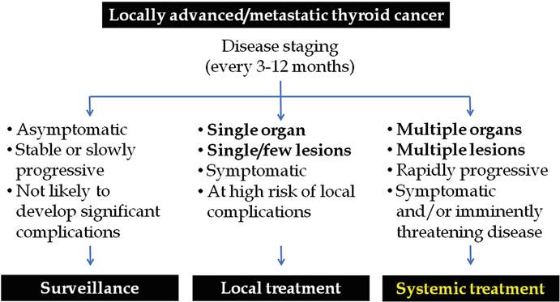
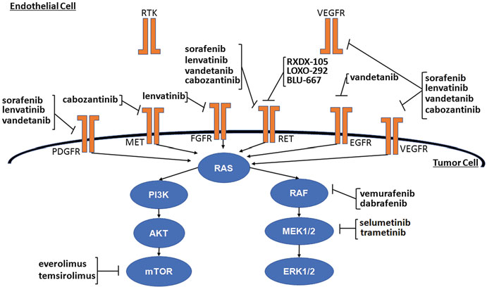

<!DOCTYPE html>
<html lang="en">
<head>
<meta charset="UTF-8">
<meta name="viewport" content="width=device-width, initial-scale=1.0">
<title>Surgical Insight Hub — New (Medical) Treatment for Thyroid Carcinoma Monograph</title>
<link href="https://fonts.googleapis.com/css2?family=Playfair+Display:wght@400;600;700&family=Source+Serif+4:ital,opsz,wght@0,8..60,300;0,8..60,400;0,8..60,600;1,8..60,300;1,8..60,400&family=JetBrains+Mono:wght@400;500&display=swap" rel="stylesheet">
<link rel="stylesheet" href="../../css/theme.css?v=4.0.0">
<link rel="stylesheet" href="../../css/shared.css">
<script>
  const savedTheme = localStorage.getItem('sih-theme') || 'light';
  if (savedTheme === 'dark') document.documentElement.setAttribute('data-theme', 'dark');
</script>
<style>
:root {
  --primary:   #4C1D95; 
  --primary-dk:#2E1065;
  --primary-lt:#F5F3FF;
  --accent:    #7C3AED;
  --accent2:   #E11D48;
  --gold:      #D97706;
  --gold-lt:   #FEF3C7;
  --red:       #E11D48;
  --red-lt:    #FFF1F2;
  --bg:        #FAFAFA;
  --bg2:       #F4F4F5;
  --border:    #E5E7EB;
  --text:      #0F172A;
  --muted:     #64748B;
  --white:     #FFFFFF;
  --sidebar-w: 320px;
}
[data-theme="dark"] {
  --bg: #0A0702;
  --bg2: #140E05;
  --text: #F3F4F6;
  --muted: #A3A3A3;
  --border: rgba(255,255,255,0.08);
  --primary-lt: #2E1065;
  --white: #140E05;
}
*,*::before,*::after{box-sizing:border-box;margin:0;padding:0;}
html{scroll-behavior:smooth;}
body{font-family:'Source Serif 4',Georgia,serif;background:var(--bg);color:var(--text);font-size:16px;line-height:1.75;}

#sidebar {
  position: fixed; top: 0; left: 0; width: var(--sidebar-w); height: 100vh;
  background: var(--primary-dk); color: #F5F3FF;
  display: flex; flex-direction: column;
  z-index: 1000; overflow: hidden;
  transform: translateX(-100%);
  transition: transform 0.3s cubic-bezier(0.4, 0, 0.2, 1);
  box-shadow: 4px 0 24px rgba(0,0,0,0.4);
}
body.sidebar-open #sidebar { transform: translateX(0); }

#sidebar-overlay {
  position: fixed; top: 0; left: 0; width: 100vw; height: 100vh;
  background: rgba(46, 16, 101, 0.7); backdrop-filter: blur(3px);
  z-index: 950; opacity: 0; pointer-events: none; transition: opacity 0.3s ease;
}
body.sidebar-open #sidebar-overlay { opacity: 1; pointer-events: auto; }

#sidebar-toggle {
  position: fixed; top: 72px; left: 24px; z-index: 900;
  background: var(--primary); color: white;
  border: none; border-radius: 30px;
  padding: 10px 18px; font-family: 'JetBrains Mono', monospace; font-size: 13px; font-weight: 600;
  letter-spacing: 0.05em; cursor: pointer; box-shadow: 0 4px 12px rgba(0,0,0,0.25);
  display: flex; align-items: center; gap: 8px; transition: all 0.2s;
}
#sidebar-toggle:hover { background: var(--accent2); transform: translateY(-2px); }

#sidebar-header{padding:20px 20px 14px;border-bottom:1px solid rgba(255,255,255,0.08);flex-shrink:0;}
#sidebar-header .logo{font-family:'Playfair Display',serif;font-size:13px;font-weight:700;color:var(--accent2);letter-spacing:0.08em;text-transform:uppercase;margin-bottom:4px;}
#sidebar-header .sub{font-size:10.5px;color:rgba(245,243,255,0.6);letter-spacing:0.04em;}
#sidebar-search{padding:10px 14px;border-bottom:1px solid rgba(255,255,255,0.05);flex-shrink:0;}
#sidebar-search input{width:100%;background:rgba(255,255,255,0.05);border:1px solid rgba(255,255,255,0.1);border-radius:6px;color:#F5F3FF;padding:6px 10px;font-size:12px;font-family:'Source Serif 4',serif;outline:none;transition:border-color 0.2s;}
#sidebar-search input::placeholder{color:rgba(245,243,255,0.4);}
#sidebar-search input:focus{border-color:var(--accent2);}
#sidebar-nav{flex:1;overflow-y:auto;padding:8px 0 20px;}
#sidebar-nav::-webkit-scrollbar{width:4px;}
#sidebar-nav::-webkit-scrollbar-thumb{background:rgba(255,255,255,0.15);border-radius:2px;}
.vol-label{font-size:9.5px;font-weight:600;letter-spacing:0.12em;text-transform:uppercase;color:var(--accent2);padding:14px 18px 4px;}
.nav-item{display:block;padding:8px 18px 8px 22px;font-size:12.5px;color:rgba(245,243,255,0.8);text-decoration:none;border-left:2px solid transparent;transition:all 0.15s;line-height:1.4;}
.nav-item:hover{color:#fff;background:rgba(255,255,255,0.03);border-left-color:rgba(225,29,72,0.5);}
.nav-item.active{color:#fff;background:rgba(255,255,255,0.06);border-left-color:var(--accent2);font-weight:600;}
.nav-item .num{font-family:'JetBrains Mono',monospace;font-size:10px;color:rgba(245,243,255,0.4);margin-right:6px;}

#main{margin-left:0; min-height:100vh;}
#hero{background:linear-gradient(135deg,var(--primary-dk) 0%,#4C1D95 60%,#2E1065 100%);color:white;padding:120px 72px 60px;position:relative;overflow:hidden;}
#hero::before{content:'';position:absolute;top:-60px;right:-60px;width:380px;height:380px;background:radial-gradient(circle,rgba(225,29,72,0.15) 0%,transparent 70%);pointer-events:none;}
#hero::after{content:'';position:absolute;bottom:0;left:0;right:0;height:3px;background:linear-gradient(90deg,var(--accent2),var(--gold),transparent);}
#hero .eyebrow{font-family:'JetBrains Mono',monospace;font-size:11px;letter-spacing:0.16em;color:var(--accent2);text-transform:uppercase;margin-bottom:14px;}
#hero h1{font-family:'Playfair Display',serif;font-size:42px;font-weight:700;line-height:1.15;margin-bottom:10px;color:#fff;}
#hero .subtitle{font-size:18px;color:rgba(255,255,255,0.8);font-style:italic;margin-bottom:28px;}
#hero .badges{display:flex;gap:10px;flex-wrap:wrap;}
#hero .badge{background:rgba(255,255,255,0.1);border:1px solid rgba(255,255,255,0.2);border-radius:20px;padding:4px 14px;font-size:12px;color:rgba(255,255,255,0.95);font-family:'JetBrains Mono',monospace;}

.content-wrap{max-width:900px;margin:0 auto;padding:40px 48px 80px;}

.callout{margin:18px 0;padding:14px 18px;border-radius:0 8px 8px 0;border-left:4px solid;font-size:14px;line-height:1.65;}
.callout .label{font-family:'JetBrains Mono',monospace;font-size:10px;font-weight:600;letter-spacing:0.12em;text-transform:uppercase;display:block;margin-bottom:4px;}
.callout.pearl{background:var(--gold-lt);border-color:var(--gold);color:var(--text);}
.callout.pearl .label{color:var(--gold);}
.callout.warn{background:var(--red-lt);border-color:var(--red);color:var(--text);}
.callout.warn .label{color:var(--red);}

@media(max-width:900px) {
  .content-wrap { padding: 20px 20px 60px; }
  #hero { padding: 80px 20px 40px; }
  #hero h1 { font-size: 30px; }
  #sidebar-toggle { top: 64px; left: 16px; }
}
</style>
<link rel="icon" type="image/png" href="../../assets/images/Surgical_Insight_Hub_Logo.png">
</head>
<body>

<nav class="nav" id="mainNav">
  <div class="nav-left">
    <a href="../../index.html" class="nav-pill">
      <div class="nav-logo-img">
        
      </div>
      <div>
        <div class="nav-brand-text">Surgical Insight Hub</div>
        <div class="nav-brand-sub">The Residency Journal</div>
      </div>
    </a>
  </div>
  <div class="nav-links-pill">
    <a href="../../index.html">Home</a>
    <a href="../../notes.html" class="active">Notes</a>
    <a href="../operative_approach.html">Playbook</a>
    <a href="../../arena.html?v=4.0.0">MCQ Arena</a>
    <a href="../../podcast.html">Podcast</a>
    <a href="../../surgery-talk.html">Surgery Talk</a>
    <a href="../../about.html">About</a>
  </div>
  <div class="nav-right">
    <button class="theme-toggle" id="themeToggle" aria-label="Toggle Theme">
      <svg id="moonIcon" viewBox="0 0 24 24" width="18" height="18"><path d="M21 12.79A9 9 0 1 1 11.21 3 7 7 0 0 0 21 12.79z"></path></svg>
      <svg id="sunIcon" style="display:none;" viewBox="0 0 24 24" width="18" height="18"><circle cx="12" cy="12" r="5"></circle><line x1="12" y1="1" x2="12" y2="3"></line><line x1="12" y1="21" x2="12" y2="23"></line><line x1="4.22" y1="4.22" x2="5.64" y2="5.64"></line><line x1="18.36" y1="18.36" x2="19.78" y2="19.78"></line><line x1="1" y1="12" x2="3" y2="12"></line><line x1="21" y1="12" x2="23" y2="12"></line><line x1="4.22" y1="19.78" x2="5.64" y2="18.36"></line><line x1="18.36" y1="5.64" x2="19.78" y2="4.22"></line></svg>
    </button>
    <a href="https://t.me/sugicalInsightHub" target="_blank" class="nav-tg-btn" title="Join Telegram">
      <svg width="18" height="18" viewBox="0 0 24 24" fill="#f0d080"><path d="M12 0C5.37 0 0 5.37 0 12s5.37 12 12 12 12-5.37 12-12S18.63 0 12 0zm5.89 8.22l-1.97 9.28c-.15.66-.54.82-1.08.51l-3-2.21-1.45 1.39c-.16.16-.3.3-.61.3l.21-3.05 5.56-5.02c.24-.21-.05-.33-.37-.12l-6.87 4.33-2.96-.92c-.64-.2-.66-.64.14-.95l11.57-4.46c.54-.19 1.01.13.83.94z"/></svg>
    </a>
    <a href="../../arena.html?v=4.0.0" class="nav-btn arena-btn">MCQ Arena</a>
  </div>
</nav>

<div class="mob-nav-overlay" id="mobNavOverlay" onclick="closeMobNav()"></div>
<div class="mob-nav-sheet" id="mobNavSheet">
  <div class="mob-nav-handle"></div>
  <a href="../../index.html" onclick="closeMobNav()">Home</a>
  <a href="../../notes.html" onclick="closeMobNav()">Notes</a>
  <a href="../operative_approach.html" onclick="closeMobNav()">Playbook</a>
  <a href="../../podcast.html" onclick="closeMobNav()">Podcast</a>
  <a href="../../surgery-talk.html" onclick="closeMobNav()">Surgery Talk</a>
  <a href="../../arena.html" onclick="closeMobNav()">MCQ Arena</a>
  <a href="../../about.html" onclick="closeMobNav()">About</a>
  <a href="https://t.me/sugicalInsightHub" target="_blank" rel="noopener" onclick="closeMobNav()" style="color: var(--brand-gold); font-weight: 800;">Join Telegram Community</a>
</div>

<button id="sidebar-toggle" onclick="toggleSidebar()">
  <span>📜</span> Chapter Navigation
</button>
<div id="sidebar-overlay" onclick="closeSidebar()"></div>

<aside id="sidebar">
  <div id="sidebar-header">
    <div class="logo">Surgical Insight Hub</div>
    <div class="sub">Thyroid Dx Textbook Series</div>
  </div>
  <div id="sidebar-search">
    <input type="text" placeholder="Search chapters..." oninput="filterNav(this.value)">
  </div>
  <nav id="sidebar-nav">
    <div class="vol-label">All 25 Endocrine Chapters</div>
    <a class="nav-item" href="endocrine_ch01_regulation_of_thyroid_function.html"><span class="num">Ch 1</span>Regulation of Thyroid Function, Synthesis, and Function of Thyroid Hormones</a>
<a class="nav-item" href="endocrine_ch02_tests_of_thyroid_function.html"><span class="num">Ch 2</span>Tests of Thyroid Function</a>
<a class="nav-item" href="endocrine_ch03_thyroid_autoantibodies.html"><span class="num">Ch 3</span>Thyroid Autoantibodies</a>
<a class="nav-item" href="endocrine_ch04_nonisotopic_thyroid_imaging.html"><span class="num">Ch 4</span>Nonisotopic Thyroid Imaging</a>
<a class="nav-item" href="endocrine_ch05_nontoxic_goiter.html"><span class="num">Ch 5</span>Nontoxic Goiter</a>
<a class="nav-item" href="endocrine_ch06_thyroid_nodule.html"><span class="num">Ch 6</span>Thyroid Nodule</a>
<a class="nav-item" href="endocrine_ch07_hashimoto_s_thyroiditis.html"><span class="num">Ch 7</span>Hashimoto´s Thyroiditis</a>
<a class="nav-item" href="endocrine_ch08_postpartum_thyroiditis_and_sil.html"><span class="num">Ch 8</span>Postpartum Thyroiditis and Silent Thyroiditis</a>
<a class="nav-item" href="endocrine_ch09_acute_and_subacute_thyroiditis.html"><span class="num">Ch 9</span>Acute and Subacute Thyroiditis</a>
<a class="nav-item" href="endocrine_ch10_classification_and_etiopathoge.html"><span class="num">Ch 10</span>Classification and Etiopathogenesis of Hypothyroidism</a>
<a class="nav-item" href="endocrine_ch11_congenital_hypothyroidism.html"><span class="num">Ch 11</span>Congenital Hypothyroidism</a>
<a class="nav-item" href="endocrine_ch12_central_hypothyroidism.html"><span class="num">Ch 12</span>Central Hypothyroidism</a>
<a class="nav-item" href="endocrine_ch13_diagnosis_and_treatment_of_hyp.html"><span class="num">Ch 13</span>Diagnosis and Treatment of Hypothyroidism</a>
<a class="nav-item" href="endocrine_ch14_graves_disease.html"><span class="num">Ch 14</span>Graves´ Disease</a>
<a class="nav-item" href="endocrine_ch15_graves_ophthalmopathy.html"><span class="num">Ch 15</span>Graves´ Ophthalmopathy</a>
<a class="nav-item" href="endocrine_ch16_treatment_of_graves_disease.html"><span class="num">Ch 16</span>Treatment of Graves´ Disease</a>
<a class="nav-item" href="endocrine_ch17_toxic_adenoma_and_multinodular.html"><span class="num">Ch 17</span>Toxic Adenoma and Multinodular Toxic Goiter</a>
<a class="nav-item" href="endocrine_ch18_pathogenesis_of_thyroid_carcin.html"><span class="num">Ch 18</span>Pathogenesis of Thyroid Carcinoma</a>
<a class="nav-item" href="endocrine_ch19_differentiated_thyroid_carcino.html"><span class="num">Ch 19</span>Differentiated Thyroid Carcinoma of Follicular Origin</a>
<a class="nav-item" href="endocrine_ch20_medullary_carcinoma.html"><span class="num">Ch 20</span>Medullary Carcinoma</a>
<a class="nav-item" href="endocrine_ch21_anaplastic_and_other_forms_of_.html"><span class="num">Ch 21</span>Anaplastic and Other Forms of Thyroid Carcinoma</a>
<a class="nav-item active" href="endocrine_ch22_new_medical_treatment_for_thyr.html"><span class="num">Ch 22</span>New (Medical) Treatment for Thyroid Carcinoma</a>
<a class="nav-item" href="endocrine_ch23_thyroid_physiology_and_thyroid.html"><span class="num">Ch 23</span>Thyroid Physiology and Thyroid Diseases in Pregnancy</a>
<a class="nav-item" href="endocrine_ch24_non_thyroidal_illness.html"><span class="num">Ch 24</span>Non-thyroidal Illness</a>
<a class="nav-item" href="endocrine_ch25_drugs_and_other_substances_int.html"><span class="num">Ch 25</span>Drugs and Other Substances Interfering with Thyroid Function</a>

  </nav>
</aside>

<main id="main">
<header id="hero">
  <div class="eyebrow">Endocrine Surgery · Chapter 22</div>
  <h1>New (Medical) Treatment for Thyroid Carcinoma</h1>
  <p class="subtitle">Structured Surgical Monograph formatted with fluid prose, inline textbook diagnostic plates, and clinical guidance.</p>
  <div class="badges">
    <span class="badge">Chapter 22</span>
    <span class="badge">Inline Plates</span>
    <span class="badge">Thyroid Dx PDF</span>
  </div>
</header>

<div class="content-wrap">
  <section class="topic">
    
    <div class="callout pearl" style="margin-bottom:28px;">
      <span class="label">🎓 TEXTBOOK MONOGRAPH — THYROID DX</span>
      Full surgical monograph extracted directly from <strong>Thyroid Pathology and Laboratory Diagnostics</strong> (Chapter 22: New (Medical) Treatment for Thyroid Carcinoma). Features complete text, formatted clinical guidance, and inline textbook figures.
    </div>
<p style="font-size:16px; line-height:1.75; margin-bottom:16px; color:var(--text);">New (Medical) Treatment for Thyroid Carcinoma Sebastiano Filetti and Steven I. Sherman Contents Antiangiogenic Therapies ....................................................................... Rationale for the Use of Antiangiogenic Drug Therapy in Thyroid Cancer ............... Antiangiogenic Tyrosine Kinase Inhibitors Currently Approved for Treatment of Advanced Thyroid Cancer ................................................................... Choosing the Right Antiangiogenic Drug ................................................... Therapies Targeting MAPK Pathway Signaling ................................................ Rationale for Targeting Mitogen-Activated Protein Kinase (MAPK) Signaling in Thyroid Cancers ............................................................................. BRAF-Directed Therapy for Advanced Thyroid Cancers .................................. MEK-Directed Therapy for Advanced DTC ................................................ Combined BRAF- and MEK-Directed Therapy for Advanced Thyroid Cancers .......... Redifferentiation with BRAF- and MEK-Directed Therapy ................................ Therapies Targeting Phosphatidylinositol 3-Kinase/AKT Pathway Signaling ................. Mammalian Target of Rapamycin (mTOR)-Directed Therapy ............................. Combining mTOR-Directed Therapy with VEGFR-Directed TKI ......................... Selectively Targeting RET or TRK Kinase Mutations ......................................... Immune Checkpoint-Directed Therapy .........................................................</p>
<h3 style="font-family:'Playfair Display',serif; font-size:20px; color:var(--primary); margin:32px 0 14px; border-bottom:1px solid var(--border); padding-bottom:6px;">References .......................................................................................</h3>

                <div style="display:flex; gap:16px; margin:20px 0; padding:16px; border-radius:14px; border:1px solid var(--border); background:var(--bg2); align-items:center;">
                  <div style="width:180px; min-width:180px; height:140px; border-radius:10px; overflow:hidden; border:1px solid var(--border); background:#fff; display:flex; align-items:center; justify-content:center; padding:6px; flex-shrink:0;">
                    
                  </div>
                  <div style="flex:1;">
                    <div style="font-family:'JetBrains Mono',monospace; font-size:11px; font-weight:700; color:var(--accent2); text-transform:uppercase; margin-bottom:6px;">Textbook Illustration &amp; Diagnostic Plate</div>
                    <div style="font-size:13.5px; color:var(--muted); line-height:1.5;">High-resolution diagnostic plate illustrating references ....................................................................................... in Chapter 22.</div>
                  </div>
                </div>
<ul style="margin:12px 0 20px 20px;">
<li style="margin-bottom:8px; line-height:1.65;">Abstract</li>
</ul>
<h3 style="font-family:'Playfair Display',serif; font-size:20px; color:var(--primary); margin:32px 0 14px; border-bottom:1px solid var(--border); padding-bottom:6px;">Treatment of locally advanced/metastatic thyroid cancer patients poses several</h3>

                <div style="display:flex; gap:16px; margin:20px 0; padding:16px; border-radius:14px; border:1px solid var(--border); background:var(--bg2); align-items:center;">
                  <div style="width:180px; min-width:180px; height:140px; border-radius:10px; overflow:hidden; border:1px solid var(--border); background:#fff; display:flex; align-items:center; justify-content:center; padding:6px; flex-shrink:0;">
                    
                  </div>
                  <div style="flex:1;">
                    <div style="font-family:'JetBrains Mono',monospace; font-size:11px; font-weight:700; color:var(--accent2); text-transform:uppercase; margin-bottom:6px;">Textbook Illustration &amp; Diagnostic Plate</div>
                    <div style="font-size:13.5px; color:var(--muted); line-height:1.5;">High-resolution diagnostic plate illustrating treatment of locally advanced/metastatic thyroid cancer patients poses several in Chapter 22.</div>
                  </div>
                </div>
<p style="font-size:16px; line-height:1.75; margin-bottom:16px; color:var(--text);">challenges. The disease course can be rapidly progressive or can spontaneously S. Filetti (*) Department of Internal Medicine and Medical Specialties, University of Rome Sapienza, Rome, Italy e-mail: sebastiano.filetti@uniroma1.it S. I. Sherman Department of Endocrine Neoplasia and Hormonal Disorders, University of Texas MD Anderson Cancer Center, Houston, TX, USA e-mail: sisherma@mdanderson.org # Springer International Publishing AG, part of Springer Nature 2018 P. Vitti, L. Hegedüs (eds.), Thyroid Diseases, Endocrinology, remain stable over time. Periodic (3–12 months) imaging assessments are indi- cated. The tumor burden, location, and the pace of volume growth should be taken into account for treatment decision (Fig. 1). When small disease burden and no symptomatic/threatening lesion are present, the patient should be actively surveilled. In case of single/few threatening lesions, local treatment should be preferred. Large tumor burden and/or rapidly (<12 months) progressing disease are indicators for systemic treatments (Haugen et al. 2016). Approved (Tables 1 and 2) and investigational drugs (Table 3) for the treatment of thyroid cancer are presented in this chapter. Figure 2 shows all the cited kinase inhibitors and their targets in thyroid cancer cells and in endothelial cells. Keywords Advanced Thyroid Cancer · Tyrosine Kinase Inhibitors · Antiangiogenic Drugs · MAPK Pathway · Phosphatidylinositol 3-Kinase/AKT Pathway · Immunotherapy</p>
<h3 style="font-family:'Playfair Display',serif; font-size:20px; color:var(--primary); margin:32px 0 14px; border-bottom:1px solid var(--border); padding-bottom:6px;">Treatment of locally advanced/metastatic thyroid cancer patients poses several</h3>
<p style="font-size:16px; line-height:1.75; margin-bottom:16px; color:var(--text);">challenges. The disease course can be rapidly progressive or can spontaneously remain stable over time. Periodic (3–12 months) imaging assessments are indicated. The tumor burden, location, and the pace of volume growth should be taken into account for treatment decision (Fig. 1). When small disease burden and no symp- tomatic/threatening lesion are present, the patient should be actively surveilled. In case of single/few threatening lesions, local treatment should be preferred. Large tumor burden and/or rapidly (<12 months) progressing disease are indicators for systemic treatments (Haugen et al. 2016). Approved (Tables 1 and 2) and investi- gational drugs (Table 3) for the treatment of thyroid cancer are presented in this chapter. Figure 2 shows all the cited kinase inhibitors and their targets in thyroid cancer cells and in endothelial cells. Antiangiogenic Therapies Rationale for the Use of Antiangiogenic Drug Therapy in Thyroid Cancer Thyroid carcinomas, regardless of whether they originate from follicular or para- follicular cells, are richly vascularized tumors, with microvessel densities exceeding those in the surrounding normal thyroid tissue (Akslen and Livolsi 2000; Durante et al. 2011; Jebreel et al. 2007; Verrienti et al. 2016). Moreover, increased angiogen- esis is clearly correlated with more aggressive tumor behavior and metastasis (Dhar et al. 1998; Ishiwata et al. 1998). These findings suggest that, to grow and metastasize, S. Filetti and S. I. Sherman thyroid cancers require an “angiogenic switch” that tips the balance between angio- genic stimulators and inhibitors toward the former (Fallahi et al. 2015). Neovascularization is controlled by complex molecular mechanisms. The main stimulating pathways are those activated by the vascular endothelial growth factors (VEGFs) and platelet-derived growth factors (PDGFs) expressed on endothelial Fig. 1 Management of patients with locally advanced/metastatic thyroid cancer</p>
<h3 style="font-family:'Playfair Display',serif; font-size:20px; color:var(--primary); margin:32px 0 14px; border-bottom:1px solid var(--border); padding-bottom:6px;">Table 1 Inhibitory concentrations (IC50 [nM]) for the relevant targets of the four drugs approved</h3>
<ul style="margin:12px 0 20px 20px;">
<li style="margin-bottom:8px; line-height:1.65;"><strong>for advanced thyroid</strong> cancer Drug targets DTC MTC Sorafeniba, b Lenvatinibc, d Vandetanibe, f Cabozantinibg VEGFR-1 – 22 nM – – VEGFR-2 15 nM</li>
<li style="margin-bottom:8px; line-height:1.65;">4 nM</li>
</ul>
<p style="font-size:16px; line-height:1.75; margin-bottom:16px; color:var(--text);">40 nM 0.035 nM VEGFR-3 20 nM 5.2 nM 110 nM – PDGFRalfa – 51 nM – – PDGFRbeta 57 nM 39 nM 1100 nM – BRAF 22 nM – – – RET 5.9 nM 35 nM 100 nM 5.2 nM Others (IC50) Raf-1 (6 nM) FGFR1 (46 nM), KIT (100 nM) EGFR (500 nM) MET (1.3 nM), KIT (4.6 nM) Drug Target References: aWilhelm et al. (2004) bCarlomagno et al. (2006) cMatsui et al. (2008) dOkamoto et al. (2013) eWedge et al. (2002) fCarlomagno et al. (2002) gYakes et al. (2011) New (Medical) Treatment for Thyroid Carcinoma</p>
<h3 style="font-family:'Playfair Display',serif; font-size:20px; color:var(--primary); margin:32px 0 14px; border-bottom:1px solid var(--border); padding-bottom:6px;">Table 2 Summary of efficacy results and treatment-related adverse events occulting in the</h3>
<p style="font-size:16px; line-height:1.75; margin-bottom:16px; color:var(--text);">DECISION, SELECT, ZETA, and EXAM trials Indication in thyroid cancer Locally advanced or metastatic RAI-R DTC Locally advanced or metastatic MTC Triala DECISION SELECT ZETA EXAM</p>
<h3 style="font-family:'Playfair Display',serif; font-size:20px; color:var(--primary); margin:32px 0 14px; border-bottom:1px solid var(--border); padding-bottom:6px;">Treatment arm</h3>
<p style="font-size:16px; line-height:1.75; margin-bottom:16px; color:var(--text);">Sorafenib vs placebo Lenvatinibc vs placebo Vandetanibc vs placebo Cabozantinib vs placebo N 207 vs 210 261 vs 131 231 vs 100 219 vs 111 PFS, months 10.8 vs 5.8 18.3 vs 3.6 30.5 vs 19.3 11.2 vs 4.0 (HR, 95% CI; p value) (0.59, 0.45–076; p < 0.0001) (0.21, 0.14–0.31; p < 0.001) (0.46, 0.31–0.69; p < 0.001) (0.28, 0.19–0.40; p < 0.001) Response rate (%) Complete response 0 vs 0 1.5 vs 0 0 vs 0 0 vs 0 Partial response 12.2 vs 0.5 63.2 vs 1.5 45 vs 13 28 vs 0 Stable disease 41.8 vs 33.2 23.0 vs 54.2 NA 48.1 vs 50 Grade 3–4 AEs (%)b Hypertension 9.7 vs 2.4 41.8 vs 2.3</p>
<ul style="margin:12px 0 20px 20px;">
<li style="margin-bottom:8px; line-height:1.65;">9 vs 0</li>
<li style="margin-bottom:8px; line-height:1.65;"><strong>8.4 vs 0.9</strong> ECG QT prolonged 0 vs 0 0 vs 0</li>
<li style="margin-bottom:8px; line-height:1.65;">8 vs 1</li>
<li style="margin-bottom:8px; line-height:1.65;"><strong>0 vs 0</strong> Fatigue or asthenia 5.3 vs 1.4 9.2 vs 2.3</li>
<li style="margin-bottom:8px; line-height:1.65;">6 vs 1</li>
<li style="margin-bottom:8px; line-height:1.65;"><strong>9.3 vs 2.8</strong> Decreased appetite 2.4 vs 0 5.4 vs 0</li>
<li style="margin-bottom:8px; line-height:1.65;">4 vs 0</li>
<li style="margin-bottom:8px; line-height:1.65;"><strong>4.7 vs 0.9</strong> Dysgeusia 0 vs 0 0 vs 0 0 vs 0 0.5 vs 0 Nausea 0 vs 0 2.3 vs 0.8 0 vs 0 1.4 vs 9 Diarrhea 5.3 vs 1</li>
<li style="margin-bottom:8px; line-height:1.65;">8 vs 0</li>
<li style="margin-bottom:8px; line-height:1.65;"><strong>11 vs 2</strong> 15.9 vs 1.8 Decreased weight 5.8 vs 1 9.6 vs 0 0 vs 0 4.7 vs 0 Hand-foot skin reaction 20.3 vs 0 3.4 vs 0 0 vs 0 12.6 vs 0 Rash 4.8 vs 0 0.4 vs 0</li>
<li style="margin-bottom:8px; line-height:1.65;">4 vs 1</li>
</ul>
<p style="font-size:16px; line-height:1.75; margin-bottom:16px; color:var(--text);">0.9 vs 0 Death due to adverse event (%) 5.7 vs 2.8 7.7 vs 4.6 2.1 vs 2 7.9 vs 7.3 Dose interruption due to AEs 18.8 vs 3.8 14.2 vs 2.3 12 vs 3 16 vs 8 RAI-R radioactive iodine refractory, DTC differentiated thyroid cancer MTC medullary thyroid cancer, AEs adverse events HR hazard ratio CI confidence interval aCrossover to the study drug upon progression was allowed in all trials except EXAM bAdverse events are reported according to National Cancer Institute–Common Terminology Criteria for Adverse Events. The grade 3–4 adverse events reported in the ZETA trials only included those that occurred with an incidence 2% on either arm cThe efficacy and safety of vandetanib are also being assessed in patients with differentiated thyroid cancer. The phase III, randomized, placebo-controlled, “registration” trial initiated for this purposed clinicaltrials.gov) S. Filetti and S. I. Sherman</p>
<h3 style="font-family:'Playfair Display',serif; font-size:20px; color:var(--primary); margin:32px 0 14px; border-bottom:1px solid var(--border); padding-bottom:6px;">Table 3 Investigational drugs currently not approved for thyroid cancer</h3>
<p style="font-size:16px; line-height:1.75; margin-bottom:16px; color:var(--text);">Drug Targeted pathways or selective gene Main targets Phase of clinical studies Ongoing trialsa Vemurafenib MAPK RAF II NCT01286753 (completed) Dabrafenib RAF I NCT01947023 NCT02465060 Selumetinib MEK II NCT00970359 NCT00559949 NCT02393690 Trametinib MEK I/II NCT03085056 NCT02152995 Everolimus PI3K/AKT mTOR II NCT02143726 NCT03139747 Sirolimus temsirolimus mTOR II NCT03099356 RXDX-105 RET RET I – LOXO-292 RET I NCT03157128 BLU-667 RET I NCT03037385 LOXO-101 (larotrectinib) TRK TRK II NCT02576431 Fig. 2 Kinase inhibitors and their targets in thyroid cancers. Key molecular signaling pathways involved in thyroid cancers are shown, along with clinically relevant kinase inhibitors. RTK receptor tyrosine kinase New (Medical) Treatment for Thyroid Carcinoma cells. After binding to its receptors (VEGFR-1, VEGFR-2, and VEGFR-3), VEGF (in particular, VEGF-A) triggers the formation of new blood vessels in tumor tissues (Kerbel 2008). VEGFR-2 is the major mediator of angiogenesis. The role of VEGFR-1 is controversial: it has been described as both a positive and a negative regulator of VEGFR-2 signaling (Olsson et al. 2006). VEGFR-3, which is expressed by lymphatic endothelial cells, promotes tumor lymphangiogenesis and tumor spread through lymphatic vessels (Laakkonen et al. 2007). Platelet-derived growth factors and their receptors (PDGFR-α and PDGFR-β) are crucial for the maturation and stability of the new vascular vessels and for the induction of lymphangiogenesis (Cao 2013). It is important to recall that VEGFRs and PDGFRs are also expressed by the neoplastic cells themselves, where they promote tumor growth and tumor motility through a VEGF- and PDGF-related autocrine loops (Jechlinger et al. 2006; Kerbel 2008). Cell lines as well as tumor tissues and serum from patients with thyroid cancer of follicular cell origin are characterized by high expression of proangiogenic factors – including VEGF, PDGF, and their receptors – which is strongly correlated with the tumor phenotype (Klein et al. 2001; Lennard et al. 2001; Marotta et al. 2015; Vieira et al. 2005; Yu et al. 2005). VEGF overexpression in patients with papillary thyroid cancer has been associated with a higher risk of metastasis and recurrence and decreased disease-free survival (Marotta et al. 2015). Proangiogenic gene expression patterns have also been confirmed in medullary thyroid cancer (MTC) (Mancikova et al. 2014; Verrienti et al. 2016), where it seems to correlate with a more aggressive phenotype, as suggested by the overexpression of VEGFR-2 in MTC metastases (Rodriguez-Antona et al. 2010). Notably, there is also some evidence supporting correlation between proangiogenic pathway activation and thyroid tumor genotype (Mancikova et al. 2014; Verrienti et al. 2016; Vieira et al. 2005). These features make thyroid cancers an excellent target for drugs that inhibit proangiogenic signaling by preventing phosphorylation of the tyrosine kinase receptors that trigger it. The vast majority of tyrosine kinase inhibitors (TKIs) have multiple targets. In general, those that inhibit the kinases involved in proangiogenic signaling also exert direct anti- proliferative effects mediated by their inhibition of molecules involved in other intracellular pathways (Marotta et al. 2015). The latter effects may contribute to the efficacy of these drugs in the treatment of cancer, particularly those of the thyroid, since the mutations in RET and BRAF genes known to drive many of these tumors induce neoplastic transformation and progression by activating kinases implicated in the MAP kinase and/or the PI3K/Akt/mTOR signaling cascades (Cancer Genome Atlas Research Network 2014; Marotta et al. 2015). Antiangiogenic Tyrosine Kinase Inhibitors Currently Approved for Treatment of Advanced Thyroid Cancer Four orally available VEGFR-targeting TKIs with antiangiogenic properties are currently approved in the United States and the European Union for treatment of advanced thyroid cancer. The targets of these drugs are shown in Table 1. Features of S. Filetti and S. I. Sherman the phase III trials that supported their approval for this indication are summarized in</p>
<h3 style="font-family:'Playfair Display',serif; font-size:20px; color:var(--primary); margin:32px 0 14px; border-bottom:1px solid var(--border); padding-bottom:6px;">Table 2 and discussed below.</h3>
<p style="font-size:16px; line-height:1.75; margin-bottom:16px; color:var(--text);">VEGFR-Directed TKI Therapy for Advanced, RAI-Resistant DTC Radioactive iodine (RAI) therapy plays a major role in the treatment of DTCs, including advanced stage tumors. However, in approximately two-thirds of patients with distant metastases from DTCs, the tumor exhibits inherent or acquired insen- sitivity to radioiodine (Durante et al. 2006). The loss of this treatment option negatively impacts the prognosis (Spitzweg et al. 2014) since conventional cytotoxic chemotherapy offers limited efficacy in these cases, as well as considerable toxicity (Sherman 2010). This therapeutic void is currently being filled by VEGFR-targeting TKIs, which are recommended for progressive, symptomatic, RAI-refractory forms of metastatic DTC by both the American Thyroid Association (Haugen et al. 2016) and the National Comprehensive Cancer Network (Tuttle et al. 2014). The impor- tance of angiogenesis in DTC is well-documented (Harris and Bible 2011; Haugen et al. 2016; Ishiwata et al. 1998; Klein et al. 2001; Lennard et al. 2001; Soh and Clark 1996; Soh et al. 2000; Spitzweg et al. 2014; Yu et al. 2005), and numerous TKIs that inhibit this process have been tested in the treatment of advanced DTC. As shown in</p>
<h3 style="font-family:'Playfair Display',serif; font-size:20px; color:var(--primary); margin:32px 0 14px; border-bottom:1px solid var(--border); padding-bottom:6px;">Table 2, sorafenib and lenvatinib are the only two currently approved for this</h3>
<p style="font-size:16px; line-height:1.75; margin-bottom:16px; color:var(--text);">indication by regulatory authorities in both the United States and the European Union. Sorafenib Sorafenib was approved by the US Federal Drug Administration (FDA) in 2013 for the treatment of advanced DTC; European Medicines Agency (EMA) authorization followed shortly thereafter. The decisions were based largely on the results of a randomized, placebo-controlled, phase III trial conducted in 417 patients with locally advanced or metastatic RAI-refractory DTC that had progressed within the past 14 months (DECISION study) (Brose et al. 2014). The median progression-free survival (PFS, the primary end point) was almost twice as long in the sorafenib group (10.8 months versus 5.8 months in the placebo arm, hazard ratio [HR] 0.59, 95% confidence interval [CI] 0.45–0.76; P < 0.0001). Moreover, 12.2% of the patients treated with sorafenib had objective responses (all partial). Overall survival was prolonged in the sorafenib cohort, as compared with the cohort receiving placebo, although this difference was not statistically significant (HR 0.80, 95% CI 0.54–1.19; p = 0.14). The latter finding is related at least in part to the design of the trial, which allowed placebo-treated patients to cross over to sorafenib treatment when tumor progression occurred. Despite these encouraging findings, quality of life appeared to be slightly worse in the sorafenib-treated arm (Schlumberger et al. 2013). Adverse events (generally grades 1–2) occurred in 204 of 207 (98.6%) patients receiving double-blind treatment with sorafenib and 183 of 209 (87.6%) of those receiving placebo. Three out of four patients in the sorafenib group developed hand-foot skin reactions (76.3%) although very few of these events led to drug discontinuation. Diarrhea (68.6%), alopecia (67.1%), and rash or desquamation (50.2%) were also common (Brose et al. 2014). New (Medical) Treatment for Thyroid Carcinoma Overall, the group treated with sorafenib had a rate of drug withdrawals caused by adverse effects that was over four times higher than that of the placebo arm and an adverse event-related mortality rate that was almost twice as high (Table 2). Lenvatinib Lenvatinib targets VEGFRs 1–3, FGFRs 1–4, PDGFRα, RET, and the stem cell growth factor receptor KIT. The FDA approved lenvatinib for treatment for advanced DTC in 2015, following publication of data from the phase III placebo-controlled trial, SELECT (Schlumberger et al. 2015). As shown in Table 2, the median PFS in the lenvatinib arm of the study exceeded that of the placebo arm by 14.7 months (HR 0.21, 95% CI 0.14–0.31; p < 0.001). This was a substantially greater gain relative to placebo than that recorded in other placebo-controlled trials, and the improvement was thought to be partly related to lenvatinib’s unique target profile and in particular its effects on FGFRs (St Bernard et al. 2005). The benefit over placebo benefit was observed across all DTC histological types (including poorly differentiated tumors), and it was unrelated to the BRAF or RAS mutation status of the tumor. Importantly, it was also significant in patients who had already received one TKI treatment. Responses (including four that were complete) were observed in almost two-thirds of the lenvatinib group and 1.5% in the placebo arm (P < 0.001). Interestingly, progression of existing bone metastases (a problem that is frequently intractable) was also less common in the lenvatinib group (23.7% vs 59.0% in the placebo arm). The median overall survival was not reached in either group. Most patients in the placebo arm ultimately crossed over to lenvatinib. Overall survival in the study group was appreciably albeit nonsignificantly prolonged (adjusted HR 0.62, 95% CI 0.40-1-00). Subsequent prespecified subgroup analysis demonstrated improved overall survival in patients over 65 years old when treated with lenvatinib compared with placebo (HR 0.53, 95% CI 0.31–0.91) (Brose et al. 2017).</p>
<h3 style="font-family:'Playfair Display',serif; font-size:20px; color:var(--primary); margin:32px 0 14px; border-bottom:1px solid var(--border); padding-bottom:6px;">Treatment-related adverse effects were common in the lenvatinib group and</h3>
<p style="font-size:16px; line-height:1.75; margin-bottom:16px; color:var(--text);">included hypertension (67.8% of the patients), diarrhea (in 59.4%), fatigue or asthenia (in 59.0%), decreased appetite (in 50.2%), decreased weight (in 46.4%), and nausea (in 41.0%). Adverse events that led to discontinuations of the study drug occurred in 37 patients (14.2%) vs 3 patients who received placebo (2.3%). Notably, 6 of the 20 deaths that occurred during lenvatinib treatment were classified as drug-related. VEGFR-Directed TKI Therapy for Advanced MTC The two TKIs currently approved for the treatment of progressive, locally advanced or metastatic MTC, vandetanib and cabozantinib, are both potent inhibitors of RET kinase, which is constitutively activated in almost all hereditary MTCs and roughly half of those that are sporadic. The RET-suppressing activity of these two drugs was in fact the major reason they were originally proposed for the treatment of MTC. Since then, however, relatively little evidence has emerged to indicate that this activity is essential to their antitumoral effects in MTC (Sherman 2013). Vandetanib and cabozantinib are also strong inhibitors of key angiogenic pathway components (Table 1), and phase III trial data suggest that vandetanib and cabozantinib are also beneficial in MTCs with wild-type RET mutation. S. Filetti and S. I. Sherman Vandetanib Vandetanib’s major targets are VEGFRs 2 and 3, epidermal growth factor (EGF) receptor, and RET. Its potent inhibition of RETwas the original basis for its proposed use in the treatment of MTC. It was approved for the treatment of advanced MTC based on the results of a phase III, multicenter, double-blind, placebo-controlled trial that enrolled 331 adults with metastatic (95%) or locally advanced MTC, 90% of which were sporadic (ZETA study). PFS (the primary end point) was significantly prolonged in the vandetanib-treated patients, as compared with the placebo arm (30.5 vs 19.3 months HR 0.46, 95% CI 0.31–0.69; p < 0.001), and this benefit was accompanied by significantly higher objective response, biochemical response, and disease control rates ( p < 0.001 for all). As in the DECISION and SELECT trials, unmasking and crossover were allowed at progression. For this reason, overall survival was not a primary end point, and no significant change in this parameter was observed at the end of the study (Wells et al. 2012). The most common grade 3–4 adverse events observed in ZETAwere those typical of TKIs in general, and all were significantly more common in the study drug group (Table 2). QTc interval prolongation was observed in 8% of the patients in the vandetanib arm (although none had torsade de pointes) (Wells et al. 2012). In the United States, the FDA has issued boxed warnings on this risk and restricted prescription to providers who have undergone training in Risk Evaluation and Mitigation Strategy (REMS). A recent meta-analysis of phase II/III trial data on FDA-approved TKI treatments (any FDA-approved drug) revealed a significantly increased risk for QTc prolongation only for sunitinib and vandetanib. The risk was independent of the duration of vandetanib treatment, but it did increase with the dose administered (Ghatalia et al. 2015). A phase IV trial is currently being conducted to assess the efficacy of lower-dose therapy (150 mg/day vs 300 mg/day) in MTC patients (AstraZeneca to Compare the Effects of Two Doses of Vandetanib in Patients with Advanced Medullary Thyroid Cancer. (Accessed February 27, 2015: Vandetanib is currently approved only for adult patients with MTC, but it has also been tested in a phase I/II trial that included 16 children/adolescents with locally advanced or metastatic MEN2B-related MTCs. Patients were started on an initial dose of 100 mg/m2/day (equivalent to the adult dose of 180 mg/day). All 15 with M918T RET germline mutations experienced tumor shrinkage, and objective responses were observed in 7 (44%). The remaining patient, who harbored a RET polymorphism (G691S, S836S), progressed after 2 months of treatment with the drug (Fox et al. 2013). Diarrhea was the most common dose-limiting adverse reaction. There were no cases of dose-limiting prolongation of QTc. Cabozantinib Cabozantinib inhibits the VEGF2R, as well as the hepatocyte growth factor receptor (MET) and RET. The efficacy and safety of cabozantinib (140 mg per day) were assessed in 330 patients with metastatic MTC (sporadic or hereditary) associated with radiographically documented progression at entry (Elisei et al. 2013) (EXAM) (Table 2). Therefore, the disease in question was on the whole more aggressive than New (Medical) Treatment for Thyroid Carcinoma that examined in the phase III trial of vandetanib, where enrollment was not limited to patients with progressive disease. The estimated PFS in the cabozantinib arm was almost three times that of the placebo group (11.2 months 4.0 months; HR 0.28, 95% CI 0.19–0.40; P < 0.001), and this improvement was unrelated to age, prior TKI exposure, or RET mutation status (hereditary or sporadic). Objective responses – all partial – were seen exclusively in the cabozantinib arm (28%) and were also unrelated to the RET mutation status. Although crossover was not allowed in the EXAM trial, the planned interim analysis (mid-June 2011) revealed no significant difference in overall survival (Elisei et al. 2013). Updated data reported in 2015 also showed an estimated median survival in the cabozantinib arm that was not significantly longer than that of placebo-treated patients (26.6 months versus 21.1 months in the placebo group; HR 0.85, 95% CI 0.64–1.12; p = 0.241). However, subgroup analysis of the patients harboring RET M918T mutation found an overall survival rate among those receiv- ing cabozantinib that was over twice as high as that in the placebo arm (44.3 vs 18.9 months, HR 0.60, 95% CI 0.38–0.95; p = 0.026). The adverse effects most commonly seen in the cabozantinib arm included diarrhea, palmar-plantar erythrodysesthesia, weight loss, decreased appetite, nausea, and fatigue. In 79% of the patients, adverse events resulted in dose reductions in 79%, and in 16% treatment had to be discontinued. The latter included some cases of life-threatening adverse events that have been seen in other VEGF inhibitor trials, including gastroin- testinal perforations, fistula formation, and hemorrhage (Blevins et al. 2014; Lamartina et al. 2016). Notably, clinically relevant QTc prolongation lasting over 500 ms was not observed in any of the cabozantinib-treated patients (Elisei et al. 2013). VEGFR-Directed TKI Therapy for Anaplastic Thyroid Cancer Attempts to treat anaplastic thyroid carcinoma (ATC) with antiangiogenic drugs have been largely unsuccessful. However, promising preliminary results have emerged from an ongoing phase II study of lenvatinib in Japanese patients with various forms of advanced thyroid cancer, including ATC. With median follow-ups of approximately 1 year, objective responses were observed in 3 (27.3%) of the 11 patients with ATCs. Five patients have received more than 6 months of treatment with lenvatinib. Treatment-emergent grade 3 or above adverse events were quite rare in the ATC subgroup, and the single death that occurred was considered unrelated to treatment (Takahashi et al. 2016). Choosing the Right Antiangiogenic Drug On the basis of the available data, it is not possible to conclude that sorafenib or lenvatinib is the first-line antiangiogenic drug of choice for advanced, RAI-refractory DTC; the same applies to the use of vandetanib versus cabozantinib for advanced MTC. For both types of thyroid cancer, the designs of the trials assessing the two drugs differed considerably in several important respects, and direct comparison of the two sets of results must therefore be undertaken with caution. S. Filetti and S. I. Sherman A look at the trials conducted in populations with DTC (Table 2) shows, for example, that tumor progression at study entry was assessed locally, at participating centers, in the DECISION study of sorafenib and centrally, by blinded independent review, in the lenvatinib trial (SELECT). The methods used to assess responses to treatment in these trials also differed. The Response Evaluation Criteria in Solid Tumor (RECIST), version 1.0, was used in the DECISION study, while version 1.1 was used in the SELECT study. The main difference lies in the number of target lesions to be followed: up to ten target lesions in total, up to five per organ in DECISION, and up to five target lesions in total, up to two per organ in SELECT. Finally, patients with prior TKI exposure were eligible for enrollment in the SELECT study, while those included in the DECISION trial had to be TKI-naïve. The populations studied in the ZETA and EXAM trials were also significantly different. As noted above, in the vandetanib study, enrollment was open to patients with locally advanced or metastatic MTCs, whereas in the cabozantinib trial, patients had to have a documented progression of locoregional or metastatic disease. The impact of this emerges clearly from the markedly shorter PFS of the placebo arm in the EXAM trials (4 months compared with 19 months in the vandetanib trial) (Table 2). Without data from comparative studies, discussion of the relative effectiveness of these drugs is largely speculative, and the choice of a first-line antiangiogenic TKI for DTC or for MTC has to be made on an individual basis. The toxicity profile of each drug (Table 2) will naturally play an important role in such decisions. Future work will be aimed at identifying molecular biomarkers to predict tumor responses to these drugs. The genetic signature of a tumor may be helpful for identifying subsets of patients potentially responsive to the antiangiogenic drugs. Thus far, the four trials reviewed above have failed to identify a specific thyroid cancer genotype that associated with objective responses. The in vivo efficacy of cabozantinib has, however, been compared in patients with RET-mutant and RAS-mutant MTCs. Response rates to the drug were similar in the two groups, and there were no statistically intergroup differences in PFS. Nonetheless, PFS among patients with RET-mutant tumors was appreciably longer (60 weeks vs 47 weeks in the RASmut group) (Sherman et al. 2016). Despite their partially overlapping mechanisms of action, cross-resistance between various TKIs appears to be limited. An alternative TKIs may thus be considered if progression occurs with first-line TKI therapy. Lenvatinib and cabozantinib in particular have proved to be effective in both first- and second-line settings (Elisei et al. 2013; Schlumberger et al. 2015). Therapies Targeting MAPK Pathway Signaling Rationale for Targeting Mitogen-Activated Protein Kinase (MAPK) Signaling in Thyroid Cancers Activated signaling through the MAPK pathway is a hallmark of most thyroid carcinomas, both those derived from follicular epithelium and the neuroendocrine MTC. For the most common, PTC, activating mutations of BRAF (particularly a New (Medical) Treatment for Thyroid Carcinoma valine-to-glutamic acid mutation in codon 600) account for nearly 60%, whereas RAS mutations and activating rearrangements of receptor tyrosine kinases such as RET and TRK account for nearly 30% (Cancer Genome Atlas Research Network 2014; Fagin and Wells 2016). MTC is associated with activating point mutations of RET kinase in at least half of cases (including germline mutations in nearly all patients with the inherited multiple endocrine neoplasia type 2 and somatic mutations in up to half of those with sporadic MTC) and RAS mutations in another 25%. Although associated with consid- erably more genomic heterogeneity and instability, anaplastic carcinomas also harbor high frequencies of BRAF and RAS mutations (Landa et al. 2016). Follicular carcino- mas, in contrast, appear less dependent upon activated signaling, with fewer than 20% bearing RAS mutations but other abnormalities including those affecting phosphatidy- linositol 3-kinase/Akt signaling being more prominent. The functional impacts of these mutations in various MAPK signaling interme- diates are overlapping but clinically relevant. Mutations in BRAF, RAS, and RETare clearly oncogenic and are highly likely to represent tumor-initiating events; this is most evident in the case of multiple endocrine neoplasia type 2, in which germline inheritance of a single mutant RET allele can lead to near-complete penetrance of the malignancy (Krampitz and Norton 2014). All of these initiating events lead to enhanced cellular proliferation. However, BRAF mutations are associated with greater degrees of functional loss of differentiation, including extensive gene expres- sion alterations leading to loss of radioiodine avidity (Cancer Genome Atlas Research Network 2014). Consequently, BRAF mutations in PTC have been asso- ciated with greater degrees of tumor invasiveness and metastasis, higher rates of tumor recurrence, and potentially greater risk for mortality (Xing et al. 2013, 2015). Later secondary events that can lead to increased tumor aggressiveness include mutations (PI3K/PTEN, Akt, p53, and TERT promoter), gene amplifications (EGFR, VEGFR), or epigenetic silencing (Landa et al. 2016; Liu and Xing 2016; Ricarte-Filho et al. 2009). BRAF-Directed Therapy for Advanced Thyroid Cancers Given the more advanced disease associated with BRAF mutations, considerable interest exists in the application of BRAF inhibitor therapy, analogous to the use of this approach successfully in other BRAF-mutant malignancies pioneered in mela- noma (Halilovic and Solit 2008). Initial support came from in vitro studies, documenting successful inhibition of downstream MAPK signaling in treated BRAF-mutant cell lines (Ouyang et al. 2006). The so-called “type 1” inhibitors, vemurafenib and dabrafenib, which preferentially bind to the active conformation of the V600EBRAF-mutant kinase domain, have been approved for treatment of advanced BRAF-mutant melanoma, and they demonstrate greater selectivity for the mutations most commonly found in PTC (Cabanillas et al. 2015). Several other BRAF inhibitors remain in phase I trials, without available data yet regarding activity in thyroid cancer. S. Filetti and S. I. Sherman Vemurafenib Vemurafenib is a potent kinase inhibitor of V600EBRAF with IC50 of 31 nM, whereas potency against wild-type BRAF kinase is threefold less (Sala et al. 2008). In the initial phase I trial of vemurafenib, three RAI-refractory PTC patients were treated with the investigational drug; one had a confirmed partial response, and the median time to progression was nearly 12 months (Kim et al. 2013). A subsequent multi- center phase II study of vemurafenib starting at 960 mg twice daily was conducted in 26 previously VEGFR-directed TKI-naïve patients and 25 previously treated with a VEGFR-directed TKI (Brose et al. 2016). In the TKI-naïve cohort, the partial response rate was 38.5% (95% CI 20.2–59.4), median duration of response was 16.5 months (95% CI 5.7–not estimable), and median progression-free survival was 18.2 months (95% CI 15.5–29.3). In the cohort of patients previously treated with a VEGFR-directed TKI, typically sorafenib, vemurafenib appeared somewhat less effective, with a partial response rate of 27.3% (95% CI 10.7–50.2), median duration of response of 7.4 months (95% CI 3.7 – not estimable), and median progression-free survival of 8.9 months (95% CI 5.5 – not estimable). The most commonly reported adverse events included rash (in 69% of patients), fatigue (in 67%), weight loss (in 51%), decreased appetite (in 45%), alopecia (in 41%), and arthralgia (in 41%), which were similar to those noted in melanoma patients treated in the pivotal phase III trial (Chapman et al. 2011); elevated creatinine levels were seen in 37% of patients as well. Of note, higher frequencies of adverse events were seen in patients treated longer with the drug, and about one-quarter discontinued therapy due to side effects of the drug. As seen in melanoma patients, cutaneous squamous cell carci- noma was reported in 22% of patients treated with vemurafenib. Finally, two patients were described as developing non-cutaneous squamous malignancies of the head and neck, which were suspected to have represented squamous dedifferentiation of metastatic thyroid carcinoma as was also seen in the original phase I experience (Kim et al. 2013). Similar efficacy has also been reported in a cohort of patients with RAI-refractory BRAF-mutant PTC treated “off label” with vemurafenib (Dadu et al. 2015). These studies provide supportive evidence that vemurafenib is likely an effective first- or second-line therapy in these patients, particularly if use of VEGFR-directed TKI is relatively contraindicated. Recently, a small trial reported that neoadjuvant vemurafenib, administered for</p>
<ul style="margin:12px 0 20px 20px;">
<li style="margin-bottom:8px; line-height:1.65;"><strong>8 weeks prior</strong> to anticipated surgery for bulky invasive BRAF-mutant PTC, led to</li>
</ul>
<p style="font-size:16px; line-height:1.75; margin-bottom:16px; color:var(--text);">greater than 50% postoperative complete response, suggesting that preoperative therapy in selected patients may be beneficial (Cabanillas et al. 2017). Several case reports have also been published describing transient responses to monotherapy with vemurafenib for patients with BRAF-mutant anaplastic thyroid carcinoma. One patient was reported to have a near-complete response but eventu- ally died of progressive disease after 61 weeks of therapy (Prager et al. 2016). Dabrafenib Binding to both the kinase hinge region and the ATP binding site, dabrafenib inhibits several of the codon 600 variants of BRAF, including V600E (IC50 0.5 nM), V600 K New (Medical) Treatment for Thyroid Carcinoma (0.6 nM), and V600D (1.9 nM) (Rheault et al. 2013). In the initial phase I trial of dabrafenib, three of nine evaluable patients with BRAF-mutant thyroid cancer experi- enced a partial response (Falchook et al. 2012). In a subsequent report of the full thyroid expansion cohort from that phase I trial, 14 patients with progressive, RAI-refractory, BRAF-mutant thyroid cancer were treated with dabrafenib, 150 mg twice daily (Falchook et al. 2015). The partial response rate was 29% (95% CI 8–58%), median duration of response had not been not reached, and median progression survival was 11.3 months (95% CI 2.1 – not estimable). The most commonly reported adverse events were cutaneous papilloma (in 57% of patients), hyperkeratosis (in 36%), alopecia (in 29%), arthralgia (in 14%), hair texture changes (in 14%), pyrexia (in 14%), sebor- rheic keratosis (in 14%), and skin hypertrophy (in 14%), similar to the original report of patients primarily with melanoma (Falchook et al. 2012). In the thyroid expansion cohort of the phase I trial, there was one patient with BRAF-mutant anaplastic carcinoma who had a mixed response to dabrafenib, experiencing shrinkage of his target lesions but growth of one new lesion that qualified as a progression event. Subsequently, two patients with metastatic ATC were reported with clinically significant though transient responses to dabrafenib therapy, lasting 3 months and 11 weeks, respectively, before the patients succumbed to fatal progression (Lim et al. 2016). Mechanisms of primary and acquired resistance to BRAF-directed therapy have been explored, primarily focusing on mutations in RAS as well as upregulation of feedback pathways that reduce the effectiveness of the treatment. For example, one study has demonstrated rapid upregulation of HER3 expression and autocrine stimulation of HER3 kinase and MAPK signaling through secretion of neuregulin when PTC cells are exposed to a BRAF inhibitor, an effect that is blocked by concurrent treatment with the HER kinase inhibitor lapatinib (Montero-Conde et al. 2013). This observation is the basis for recently initiated clinical trials of combined BRAF- and HER-directed therapies. MEK-Directed Therapy for Advanced DTC As MEK is the common downstream effector of activated signaling from either RAS or RAF, it has been an attractive potential therapeutic target for many solid tumors dependent upon the MAPK signaling pathway, particularly those with BRAF muta- tions. MEK-directed therapies, however, have yet not advanced successfully as monotherapy to induce tumor shrinkage in thyroid cancer. Selumetinib preferentially inhibits MEK at a low concentration (IC50 12 nM) but has not been approved yet for treatment of any malignancy (Yeh et al. 2007). Inhibition of MEK by selumetinib, leading to marked reduction in phosphorylated ERK, only led to cytostatic inhibition of tumor growth in a BRAF-mutant PTC xenograft model (Ball et al. 2007). A phase II trial was performed in 39 patients with progressive, RAI-refractory PTC, with a starting selumetinib dose of 100 mg twice daily (Hayes et al. 2012). A confirmed partial response was reported in only one patient (3%), and an unconfirmed partial response was described in one other; S. Filetti and S. I. Sherman median progression-free survival was 32 weeks. Although the analysis was limited by small numbers, the progression-free survival was 33 weeks in patients with tumors bearing BRAF mutation, compared with only 11 weeks in BRAF wild type (P = 0.3). Significant adverse events included rash, fatigue, diarrhea, and peripheral edema. There are no data available regarding monotherapy for thyroid cancer using the two MEK inhibitors, trametinib and cobimetinib, that are FDA approved for treatment of BRAF-mutant malignancies. Combined BRAF- and MEK-Directed Therapy for Advanced Thyroid Cancers Simultaneous inhibition of BRAF and MEK may provide a more effective approach to blocking activated MAPK signaling with possibly reduced toxicity, as has been dem- onstrated in melanoma (Flaherty et al. 2012). Based on this hypothesis, a randomized phase II study has recently been completed, comparing 53 RAI-refractory BRAF- mutant PTC patients treated with either dabrafenib alone (150 mg twice daily) or dabrafenib plus trametinib (150 mg twice daily +2 mg daily) (Shah et al. 2017). The partial response rates were 45.5% for dabrafenib alone, compared with 37.5% for the combination, which did not significantly differ; including minor responses (reduction of sum of tumor diameters between 20% and 29.9%), the predefined objective response rates were 50% and 54%, respectively. Median durations of response were 15.6 months (95% CI 4.2 – not estimable) and 13.3 months (95% CI 9.7 – not estimable), and median progression-free survivals were 11.4 months (95% CI 3.8 – not estimable) and 15.1 months (95% CI 11.7 – not estimable), respectively. Both regimens were similarly tolerated as well, and thus both could be considered possible therapeutic options for further exploration. Prolonged tolerance of a modified regimen of combination therapy,</p>
<ul style="margin:12px 0 20px 20px;">
<li style="margin-bottom:8px; line-height:1.65;"><strong>5 weeks on</strong> followed by 3 weeks off medication in each 8 week cycle, has been reported</li>
</ul>
<p style="font-size:16px; line-height:1.75; margin-bottom:16px; color:var(--text);">with maintenance of efficacy in two PTC patients, suggesting further exploration of optimal dosing regimens may be appropriate (White et al. 2017). In contrast with the limited transient efficacy seen anecdotally with BRAF-directed monotherapy in ATC, combination of BRAF- and MEK-directed treatment may be particularly effective. In a small cohort of five patients with BRAF-mutant ATC treated with dabrafenib and trametinib, three were reported with partial response to the combination, and two others had prolonged stable disease (Iyer et al. 2016). In a larger, phase 2 basket trial evaluating dabrafenib plus trametinib in multiple rare tumors, 16 patients with BRAF-mutant ATC were treated at starting doses of 150 mg twice daily and 2 mg daily, respectively (Subbiah et al. 2017). The overall response rate was 69% (95% CI 47–87%). After 12 months of therapy, 90% of responses persisted, and the 12-month progression-free and overall survivals were 79% and 80%, respectively. Although not a randomized trial, these outcomes far exceeded historical comparators. Across the basket trial, the most common adverse events were fatigue (in 38%), pyrexia (37%), and nausea (in 35%), whereas hypo- natremia (in 19%), pneumonia (in 13%), and anemia (in 13%) were the most common grade 3 or 4 in the ATC cohort. New (Medical) Treatment for Thyroid Carcinoma Redifferentiation with BRAF- and MEK-Directed Therapy For many years, researchers have attempted to identify disease mechanisms in DTC that lead to loss of radioiodine responsiveness and restore or “redifferentiate” such tumors pharmacologically, albeit with little evidence of objective response (Haugen 2004). Given extensive evidence that PTC tumors with activated MAPK signaling are less likely to be radioiodine avid and demonstrate lower expression of genes coding for differentiated thyroid proteins such as thyroglobulin and sodium-iodine symporter, it was hypothesized that therapy directed against BRAF or MEK might restore these differentiated functions. Support for this hypothesis was provided in an elegant transgenic mouse model, in which treatment with either a BRAF-directed or MEK-directed drug could restore radioiodine uptake and retention that had been lost following doxycycline-inducible V600EBRAF expression (Chakravarty et al. 2011). Subsequently, a pilot study of short-term selumetinib treatment was performed in 20 evaluable patients with RAI-refractory thyroid carcinoma to determine if the potential for objective response following RAI therapy could be restored (Ho et al. 2013). Before and after a 4 week treatment course with selumetinib, 75 mg twice daily, 12 patients (60%) experienced increased uptake documented on 124I-PET scans, of whom 7 subsequently received therapeutic 131I treatment and 5 had partial responses; thus, the intent-to-treat objective response rate was 25%. Serum thyro- globulin levels declined by >90% in the 131I-treated patients. No difference was observed in response between BRAF-mutant and wild-type tumors, but all of the patients with NRAS mutations reacquired uptake. Although no high-grade toxicities were attributed to the selumetinib, one patient who had previously received nearly 1000 mCi of 131I for thyroid cancer and pelvic irradiation for prostate cancer subsequently developed myelodysplastic syndrome 51 weeks after RAI treatment. Dabrafenib was studied similarly in ten patients with RAI-refractory BRAF- mutant PTC (Rothenberg et al. 2014). After 25 days of therapy with 150 mg twice daily, standard radioiodine diagnostic scanning demonstrated restoration of uptake in six patients; this subset subsequently received another 17 days of dabrafenib followed by therapeutic radioiodine administration. Overall, two patients had partial response of their metastatic disease, for an intent-to-treat response rate of 20%. A recent report described the results of treatment with RAI in 13 patients who had already been on long-term BRAF- and/or MEK-directed therapy for treatment of their progressive, RAI-refractory metastatic DTC (Jaber et al. 2017). Nine patients with a BRAF mutation had been treated with a BRAF inhibitor, and three patients with a RAS mutation and one without documented oncogenic mutation had been treated with a MEK inhibitor. Following a median duration of about 14 months of kinase inhibitor therapy, nine had sufficient restoration of RAI uptake to allow treatment with a median of 204 mCi 131I, followed by immediate discontinuation of BRAF- or MEK-directed therapy. Of these, seven remained progression-free after median follow-up of 8.3 months, without re-initiation of systemic therapy. Radiation pneumonitis was seen in two patients after RAI therapy. Multiple studies are now ongoing to evaluate prospectively the role of inhibitors of BRAF and/or MEK to enhance RAI responsiveness at various stages of the S. Filetti and S. I. Sherman disease process, from initial adjuvant therapy in high-risk patients to treatment of RAI-refractory metastatic disease. Given the evidence discussed previously of the role of autocrine activation of HER3 signaling following BRAF inhibition to restore activated MAPK signaling, studies are also focusing on the use of HER inhibitors in combination with MAPK pathway inhibitors for greater redifferentiation effect (Cheng et al. 2017). Therapies Targeting Phosphatidylinositol 3-Kinase/AKT Pathway Signaling Mammalian Target of Rapamycin (mTOR)-Directed Therapy Many advanced thyroid malignancies demonstrate activation of signaling through the PI3K/AKT pathway, either due to enhanced upstream signaling from RAS, diminished expression of PTEN or mutation, and/or amplification or overexpression of either PI3K or AKT (Saji and Ringel 2010). As activation of PI3K signaling through mTOR results in enhanced tumor proliferation, migration, and survival, mTOR-directed inhibitor therapy has been attempted in several small clinical trials. A phase II study was performed that included 28 patients with progressive, RAI-refractory DTC, treated with everolimus at a starting dose of 10 mg daily (Schneider et al. 2017). With a median duration of treatment of 11 months, there were no objective responses observed, whereas 39% had progressive disease as the best observed response. Median progression-free and overall survivals were</p>
<ul style="margin:12px 0 20px 20px;">
<li style="margin-bottom:8px; line-height:1.65;"><strong>9 months and</strong> 18 months, respectively. A planned subgroup analysis examined the</li>
</ul>
<p style="font-size:16px; line-height:1.75; margin-bottom:16px; color:var(--text);">relationship between blood everolimus concentrations and efficacy, but there were no significant differences in duration of stable disease, progression-free survival, or overall survival in patients whose concentrations were in the upper 50th percentile compared with the lower 50th percentile. Treatment-related adverse events included anemia (in 64%), cough (in 64%), stomatitis (in 61%), and hyperglycemia (in 61%). Preliminary data have been presented from a similar phase II trial in 33 patients with progressive, RAI-refractory DTC treated with everolimus starting at 10 mg daily (Lorch et al. 2013). Only one partial response was observed, and the median progression-free survival was 16 months (95% CI 10–not estimable). Adverse events were similar to those previously reported with the drug. An earlier multicenter trial included 24 patients with RAI-refractory DTC, treated with everolimus starting at</p>
<ul style="margin:12px 0 20px 20px;">
<li style="margin-bottom:8px; line-height:1.65;"><strong>10 mg daily</strong> (Lim et al. 2013). Partial response was seen in only two patients, lasting</li>
</ul>
<p style="font-size:16px; line-height:1.75; margin-bottom:16px; color:var(--text);">21 and 24 weeks each, and the median progression-free survival for the DTC cohort was 43 weeks. Each of the trials described also included separate cohorts with MTC patients, based upon known efficacy of everolimus in other neuroendocrine malignancies. In one study, none of seven MTC patients experienced an objective response, and the median progression-free survival was only 33 weeks (95% CI 8–56) (Schneider et al. 2015). In the second study, one of ten MTC patients had a partial response, and the others remained stable for at least 6 months (Lorch et al. 2013). In the third study, no New (Medical) Treatment for Thyroid Carcinoma partial responses were reported in nine MTC patients, and the 12-month progression- free survival was about 70% (Lim et al. 2013). Combining mTOR-Directed Therapy with VEGFR-Directed TKI With evidence of possible synergism between inhibition of mTOR and MAPK signaling, several trials have examined the effectiveness of treatment with an mTOR-directed inhibitor combined with other agents in patients with advanced thyroid cancers. A phase II study of the mTOR inhibitor temsirolimus combined with sorafenib was recently completed, having evaluated patients with progressive, RAI-refractory carcinoma derived from thyroid follicular epithelium (including</p>
<ul style="margin:12px 0 20px 20px;">
<li style="margin-bottom:8px; line-height:1.65;"><strong>2 with anaplastic</strong> carcinoma) (Sherman et al. 2017). Fifty-six percent had been</li>
</ul>
<p style="font-size:16px; line-height:1.75; margin-bottom:16px; color:var(--text);">previously treated, including cytotoxic chemotherapy in 25% and a VEGFR-directed therapy in 44%. Starting doses of sorafenib were 200 mg twice daily and of temsirolimus were 25 mg weekly. The partial response rate for the entire cohort was 22%, though slightly higher response rates were seen in patients with a BRAF mutation (30%) or no prior systemic treatment (38%). Interestingly, one patient who had previously progressed rapidly on single agent sorafenib had a marked tumor reduction on combination; subsequent tumor mutational profiling demonstrated a PTEN mutation that may have sensitized to temsirolimus therapy. One year progression-free survival was 31%, and median overall survival was 24.6 months. The most common grade 3–5 adverse events were hyperglycemia (in 19%), fatigue (in 14%), anemia (in 11%), and oral mucositis (in 8%); no information was provided about lower-grade adverse events. Given that the response rate to single agent sorafenib in previously untreated patients in the DECISION trial was only 12%, it was suggested that the combination of sorafenib and temsirolimus was appropriate for further study (Brose et al. 2014). Higher response rates were preliminarily reported using the combination of everolimus and sorafenib in a phase II trial of patients not previously exposed to either drug (Sherman et al. 2015). Of 28 patients with RAI-refractory DTC treated with starting doses of sorafenib 400 mg twice daily and everolimus 5 mg daily, 61% had partial response, and there was a 40% partial response rate in the 10 MTC patients treated in the same trial. Of various subgroups, seven of nine (78%) patients with Hurthle cell carcinoma had partial responses, and the median duration on treatment for this subgroup was about 1.5 years. In contrast, in a phase II trial that evaluated 33 RAI-refractory DTC patients who previously progressed on sorafenib monotherapy, sorafenib was dose escalated up from 200 mg per day below their previous sorafenib dose, after adding everolimus 10 mg daily (Brose et al. 2015). Median progression-free survival was 13.7 months, despite having previously pro- gressed on sorafenib alone, but only one patient had a partial response on the combination. In summary, although monotherapy with mTOR-directed therapy does not appear to be particularly beneficial in thyroid cancer, adding either everolimus or S. Filetti and S. I. Sherman temsirolimus to sorafenib may be considerably more effective than sorafenib alone. Whether these agents contribute to higher efficacy if added to other TKIs, such as lenvatinib, or whether the combination with sorafenib is in fact superior to single agent lenvatinib remains to be determined. Selectively Targeting RET or TRK Kinase Mutations Mutated kinases that are oncogenic in thyroid carcinoma are also oncogenic in many other tumor types and therefore have been valued targets for therapy across oncology. The recent recognition that activating mutations of the RET kinase, particularly fusion rearrangements and amplifications, are common in tumors, such as non-small cell lung and breast carcinomas, has led to development of drugs that selectively target RET kinase (Kato et al. 2017; Subbiah and Roszik 2017). Given that many of the toxicities associated with VEGF-directed therapies that also inhibit RET are thought to derive from VEGFR or PDGFR inhibition, the greater selectivity for RET of these newer agents may enhance their tolerability and therefore efficacy. In developing RET-directed therapies, effort has also been made to create drugs that might prevent secondary resistance by ensuring effective inhibition of gatekeeper mutations such as V804MRET. Three such selective agents are currently in phase I trials, without available efficacy data yet in RET-driven thyroid cancers: RXDX-105 (with IC50 nearly 800-fold lower for RET than VEGFR,but also effectively inhibits BRAF), LOXO-292 (IC50 at least 100-fold lower for RET), and BLU-667 (IC50 at least 70-fold lower for RET) (Brandhuber et al. 2016; Li et al. 2017; Rahal et al. 2016). A similar strategy was employed to develop drugs that selectively target activat- ing fusion mutations in TRK kinases, which are seen infrequently in common malignancies such as colon and lung carcinoma but commonly in rare malignancies such as salivary carcinomas and infantile fibrosarcoma (Khotskaya et al. 2017). In a collected series of phase I trials, the novel TRK-directed agent larotrectinib was recently reported to yield an objective response rate of 78% across a broad range of tumor histologies, including partial responses in four of five patients with TRK-rearranged PTC (Hyman et al. 2017). Median duration of response had not been reached at the time of this initial report. The most common adverse events included fatigue (in 30%), dizziness (in 28%), and nausea (in 28%), but only 11% of patients required dose reductions due drug toxicity. Immune Checkpoint-Directed Therapy Therapy directed against immune checkpoints, to target activated T cell regulatory pathways that are suppressing anticancer immunologic responses, has provided an important new treatment for many malignancies such as melanoma and non-small cell lung and bladder carcinomas (Sharma and Allison 2015). Drugs that inhibit immune checkpoints such as CTLA-4, PD-1, and PD-L1 have proven generally most New (Medical) Treatment for Thyroid Carcinoma effective in tumors that carry high levels of neoantigens capable of stimulating antitumor immune responses, and these are typically found in malignancies with higher rates of nonsynonymous mutations (Colli et al. 2016). One might expect, therefore, that DTC would not be an attractive candidate for immune checkpoint- directed therapy, given the low rates of mutations typically reported (Cancer Genome Atlas Research Network 2014; Colli et al. 2016). Conversely, cancers that demonstrate higher levels of expression of immune checkpoints, such as PD-L1 on tumor cells, may be more likely to respond to such targeted therapies, particularly if in combination with other treatments that enhance the expression of immune checkpoint proteins themselves (Cunha et al. 2017; French et al. 2017). Following this latter rationale, a cohort of 22 patients with RAI-refractory DTC were included in a large basket trial of the PD-1 inhibitor pembrolizumab, dosed intravenously at 10 mg/kg every 2 weeks (Mehnert et al. 2016). All patients had tumors that demonstrated PD-L1 expression on at least 1% of cells, similar to cutoffs recommended for other malignancies treated successfully with pembolizumab. The partial response rate was 9.1% (95% CI 1.1–29.2%), median duration of response was not reached, and 6-month progression-free survival was 58.7%. Most common adverse events were diarrhea (in 32%) and fatigue (in 18%), and one patient experienced grade 3 colitis. Multiple other clinical trials involving checkpoint inhibitors are ongoing in both DTC and MTC. Anaplastic carcinoma, on the other hand, has a markedly high mutation rate, and evidence suggests that ATC may be a particularly “hot” immunogenic environment appropriate for immunotherapy (Bastman et al. 2016; Dadu et al. 2016; Landa et al. 2016). Anecdotal cases have been reported of ATC patients as exceptional responders to anti-PD-1 therapy, and trials have been initiated both for monotherapy as well as combination of checkpoint inhibitors with either oncogene-directed therapy or radiation therapy (Kollipara et al. 2017; Tang et al. 2017; Verschraegen et al. 2017).</p>
<h3 style="font-family:'Playfair Display',serif; font-size:20px; color:var(--primary); margin:32px 0 14px; border-bottom:1px solid var(--border); padding-bottom:6px;">References</h3>
<p style="font-size:16px; line-height:1.75; margin-bottom:16px; color:var(--text);">Akslen LA, Livolsi VA. Increased angiogenesis in papillary thyroid carcinoma but lack of prog- nostic importance. Hum Pathol. 2000;31(4):439–42. Ball DW, Jin N, Rosen DM, Dackiw A, Sidransky D, Xing M, et al. Selective growth inhibition in BRAF mutant thyroid cancer by the mitogen-activated protein kinase kinase 1/2 inhibitor AZD6244. J Clin Endocrinol Metab. 2007;92(12):4712–8. Bastman JJ, Serracino HS, Zhu Y, Koenig MR, Mateescu V, Sams SB, et al. Tumor-infiltrating T cells and the PD-1 checkpoint pathway in advanced differentiated and anaplastic thyroid cancer. J Clin Endocrinol Metab. 2016;101(7):2863–73. Blevins DP, Dadu R, Hu M, Baik C, Balachandran D, Ross W, et al. Aerodigestive fistula formation as a rare side effect of antiangiogenic tyrosine kinase inhibitor therapy for thyroid cancer. Thyroid. 2014;24(5):918–22. Brandhuber B, Haas J, Tuch B, Ebata K, Bouhana K, McFaddin E, et al. The development of a potent, KDR/VEGFR2-sparing RET kinase inhibitor for treating patients with RET-dependent cancers. Eur J Cancer. 2016;69:S144. S. Filetti and S. I. Sherman Brose MS, Nutting CM, Jarzab B, Elisei R, Siena S, Bastholt L, et al. Sorafenib in radioactive iodine-refractory, locally advanced or metastatic differentiated thyroid cancer: a randomised, double-blind, phase 3 trial. Lancet. 2014;384(9940):319–28. Brose MS, Troxel AB, Yarchoan M, Cohen AB, Harlacker K, Dyanick NA, et al. A phase II study of everolimus (E) and sorafenib (S) in patients (PTS) with metastatic differentiated thyroid cancer who have progressed on sorafenib alone. J Clin Oncol. 2015;33(15):6072. Brose MS, Cabanillas ME, Cohen EE, Wirth LJ, Riehl T, Yue H, et al. Vemurafenib in patients with BRAF(V600E)-positive metastatic or unresectable papillary thyroid cancer refractory to radioactive iodine: a non-randomised, multicentre, open-label, phase 2 trial. Lancet Oncol. 2016;17(9):1272–82. Brose MS, Worden FP, Newbold KL, Guo M, Hurria A. Effect of age on the efficacy and safety of lenvatinib in radioiodine-refractory differentiated thyroid cancer in the phase III SELECT trial. J Clin Oncol. 2017;35(23):2692–9. Cabanillas ME, Patel A, Danysh BP, Dadu R, Kopetz S, Falchook G. BRAF inhibitors: experience in thyroid cancer and general review of toxicity. Horm Cancer. 2015;6(1):21–36. Cabanillas ME, Busaidy NL, Zafereo M, Waguespack SG, Hu MI, Hofmann MC, et al. Neo- adjuvant vemurafenib in patients with locally advanced papillary thyroid cancer (PTC). Eur Thyroid J. 2017;6(Suppl 1):38. Cancer Genome Atlas Research Network. Integrated genomic characterization of papillary thyroid carcinoma. Cell. 2014;159(3):676–90. Cao Y. Multifarious functions of PDGFs and PDGFRs in tumor growth and metastasis. Trends Mol Med. 2013;19(8):460–73. Carlomagno F, Vitagliano D, Guida T, Ciardiello F, Tortora G, Vecchio G, et al. ZD6474, an orally available inhibitor of KDR tyrosine kinase activity, efficiently blocks oncogenic RET kinases. Cancer Res. 2002;62:7284–90. Carlomagno F, Anaganti S, Guida T, Salvatore G, Troncone G, Wilhelm SM, et al. BAY 43-9006 inhibition of oncogenic RET mutants. J Natl Cancer Inst. 2006;98(5):326–34. Chakravarty D, Santos E, Ryder M, Knauf JA, Liao XH, West BL, et al. Small-molecule MAPK inhibitors restore radioiodine incorporation in mouse thyroid cancers with conditional BRAF activation. J Clin Invest. 2011;121(12):4700–11. Chapman PB, Hauschild A, Robert C, Haanen JB, Ascierto P, Larkin J, et al. Improved survival with vemurafenib in melanoma with BRAF V600E mutation. N Engl J Med. 2011;364 (26):2507–16. Cheng L, Jin Y, Liu M, Ruan M, Chen L. HER inhibitor promotes BRAF/MEK inhibitor-induced redifferentiation in papillary thyroid cancer harboring BRAFV600E. Oncotarget. 2017;8(12): 19843–54. Colli LM, Machiela MJ, Myers TA, Jessop L, Yu K, Chanock SJ. Burden of nonsynonymous mutations among TCGA cancers and candidate immune checkpoint inhibitor responses. Cancer Res. 2016;76(13):3767–72. Cunha LL, Marcello MA, Rocha-Santos V, Ward LS. Immunotherapy against endocrine malignan- cies: immune checkpoint inhibitors lead the way. Endocr-Relat Cancer. 2017;24(12):T261–81. Dadu R, Shah K, Busaidy NL, Waguespack SG, Habra MA, Ying AK, et al. Efficacy and tolerability of vemurafenib in patients with BRAF(V600E) -positive papillary thyroid cancer: M.D. Anderson cancer center off label experience. J Clin Endocrinol Metab. 2015;100(1): E77–81. Dadu R, Vilalabos PA, Para Cuentas ER, Rodriguez Canales J, Wistuba II, Zhou S, et al. Anaplastic thyroid cancer (ATC) is a hot immunogenic environment: immunoprofiling of a large cohort of ATC tumors. Thyroid. 2016;26(S1):OR-12. Dhar DK, Kubota H, Kotoh T, Tabara H, Watanabe R, Tachibana M, et al. Tumor vascularity predicts recurrence in differentiated thyroid carcinoma. Am J Surg. 1998;176(5):442–7. Durante C, Haddy N, Baudin E, Leboulleux S, Hartl D, Travagli JP, et al. Long-term outcome of 444 patients with distant metastases from papillary and follicular thyroid carcinoma: benefits and limits of radioiodine therapy. J Clin Endocrinol Metab. 2006;91(8):2892–9. New (Medical) Treatment for Thyroid Carcinoma Durante C, Tallini G, Puxeddu E, Sponziello M, Moretti S, Ligorio C, et al. BRAFV600E mutation and expression of proangiogenic molecular markers in papillary thyroid carcinomas. Eur J Endocrinol. 2011;165(3):455–63. Elisei R, Schlumberger MJ, Muller SP, Schoffski P, Brose MS, Shah MH, et al. Cabozantinib in progressive medullary thyroid cancer. J Clin Oncol. 2013;31(29):3639–46. Fagin JA, Wells Jr SA. Biologic and clinical perspectives on thyroid cancer. N Engl J Med. 2016;375(11):1054–67. Falchook GS, Long GV, Kurzrock R, Kim KB, Arkenau TH, Brown MP, et al. Dabrafenib in patients with melanoma, untreated brain metastases, and other solid tumours: a phase 1 dose- escalation trial. Lancet. 2012;379(9829):1893–901. Falchook GS, Millward M, Hong D, Naing A, Piha-Paul S, Waguespack SG, et al. BRAF inhibitor dabrafenib in patients with metastatic BRAF-mutant thyroid cancer. Thyroid. 2015;25(1):71–7. Fallahi P, Mazzi V, Vita R, Ferrari SM, Materazzi G, Galleri D, et al. New therapies for dedifferentiated papillary thyroid cancer. Int J Mol Sci. 2015;16(3):6153–82. Flaherty KT, Infante JR, Daud A, Gonzalez R, Kefford RF, Sosman J, et al. Combined BRAF and MEK inhibition in melanoma with BRAF V600 mutations. N Engl J Med. 2012;367(18):1694–703. Fox E, Widemann BC, Chuk MK, Marcus L, Aikin A, Whitcomb PO, et al. Vandetanib in children and adolescents with multiple endocrine neoplasia type 2B associated medullary thyroid carcinoma. Clin Cancer Res. 2013;19(15):4239–48. French JD, Bible K, Spitzweg C, Haugen BR, Ryder M. Leveraging the immune system to treat advanced thyroid cancers. Lancet Diabetes Endocrinol. 2017;5(6):469–81. Ghatalia P, Je Y, Kaymakcalan MD, Sonpavde G, Choueiri TK. QTc interval prolongation with vascular endothelial growth factor receptor tyrosine kinase inhibitors. Br J Cancer. 2015;112 (2):296–305. Halilovic E, Solit DB. Therapeutic strategies for inhibiting oncogenic BRAF signaling. Curr Opin Pharmacol. 2008;8(4):419–26. Harris PJ, Bible KC. Emerging therapeutics for advanced thyroid malignancies: rationale and targeted approaches. Expert Opin Investig Drugs. 2011;20(10):1357–75. Haugen BR. Redifferentiation therapy in advanced thyroid cancer. Curr Drug Targets Immune Endocr Metabol Disord. 2004;4(3):175–80. Haugen BR, Alexander EK, Bible KC, Doherty GM, Mandel SJ, Nikiforov YE, et al. 2015 American Thyroid Association Management Guidelines for adult patients with thyroid nodules and differentiated thyroid cancer: the American Thyroid Association Guidelines task force on thyroid nodules and differentiated thyroid cancer. Thyroid. 2016;26(1):1–133. Hayes DN, Lucas AS, Tanvetyanon T, Krzyzanowska MK, Chung CH, Murphy B, et al. Phase II efficacy and pharmacogenomic study of selumetinib (AZD6244; ARRY-142886) in iodine-131 refractory papillary thyroid carcinoma (IRPTC) with or without follicular elements. Clin Cancer Res. 2012;18(7):2056–65. Ho AL, Grewal RK, Leboeuf R, Sherman EJ, Pfister DG, Deandreis D, et al. Selumetinib-enhanced radioiodine uptake in advanced thyroid cancer. N Engl J Med. 2013;368(7):623–32. Hyman DM, Laetsch TW, Kummar S, DuBois SG, Farago AF, Pappo AS, et al. The efficacy of larotrectinib (LOXO-101), a selective tropomyosin receptor kinase (TRK) inhibitor, in adult and pediatric TRK fusion cancers. J Clin Oncol. 2017; 35(18_suppl):LBA2501-LBA. Ishiwata T, Iino Y, Takei H, Oyama T, Morishita Y. Tumor angiogenesis as an independent prognostic indicator in human papillary thyroid carcinoma. Oncol Rep. 1998;5(6):1343–8. Iyer P, Dadu R, Busaidy N, Ferrarotto R, Gule-Monroe M, Lu C, et al. Harvesting high-hanging fruit: Targeted therapy for BRAF mutant (BRAFm) and BRAF wild-type (BRAFwt) anaplastic thyroid cancer (ATC). Thyroid. 2016;26(Suppl 1):A64–A5. Jaber T, Waguespack SG, Cabanillas ME, Vu T, Santos EB, Dadu R, et al. Efficacy of targeted therapy in resensitization to radioactive iodine (RAI) in advanced thyroid cancer: The MD Anderson experience. Endocr Rev. 2017;38(3 Supplement):OR39–6. Jebreel A, England J, Bedford K, Murphy J, Karsai L, Atkin S. Vascular endothelial growth factor (VEGF), VEGF receptors expression and microvascular density in benign and malignant thyroid diseases. Int J Exp Pathol. 2007;88(4):271–7. S. Filetti and S. I. Sherman Jechlinger M, Sommer A, Moriggl R, Seither P, Kraut N, Capodiecci P, et al. Autocrine PDGFR signaling promotes mammary cancer metastasis. J Clin Invest. 2006;116(6):1561–70. Kato S, Subbiah V, Marchlik E, Elkin SK, Carter JL, Kurzrock R. RET aberrations in diverse cancers: next-generation sequencing of 4871 patients. Clin Cancer Res. 2017;23(8):1988–97. Kerbel RS. Tumor angiogenesis. N Engl J Med. 2008;358(19):2039–49. Khotskaya YB, Holla VR, Farago AF, Mills Shaw KR, Meric-Bernstam F, Hong DS. Targeting TRK family proteins in cancer. Pharmacol Ther. 2017;173:58–66. Kim KB, Cabanillas ME, Lazar AJ, Williams MD, Sanders DL, Ilagan JL, et al. Clinical responses to vemurafenib in patients with metastatic papillary thyroid cancer harboring BRAF(V600E) mutation. Thyroid. 2013;23(10):1277–83. Klein M, Vignaud JM, Hennequin V, Toussaint B, Bresler L, Plenat F, et al. Increased expression of the vascular endothelial growth factor is a pejorative prognosis marker in papillary thyroid carcinoma. J Clin Endocrinol Metab. 2001;86(2):656–8. Kollipara R, Schneider B, Radovich M, Babu S, Kiel PJ. Exceptional response with immunotherapy in a patient with anaplastic thyroid cancer. Oncologist. 2017;22(10):1149–51. Krampitz GW, Norton JA. RET gene mutations (genotype and phenotype) of multiple endocrine neoplasia type 2 and familial medullary thyroid carcinoma. Cancer. 2014;120(13):1920–31. Laakkonen P, Waltari M, Holopainen T, Takahashi T, Pytowski B, Steiner P, et al. Vascular endothelial growth factor receptor 3 is involved in tumor angiogenesis and growth. Cancer Res. 2007;67(2):593–9. Lamartina L, Ippolito S, Danis M, Bidault F, Borget I, Berdelou A, et al. Antiangiogenic tyrosine kinase inhibitors: occurrence and risk factors of hemoptysis in refractory thyroid cancer. J Clin Endocrinol Metab. 2016;101(7):2733–41. Landa I, Ibrahimpasic T, Boucai L, Sinha R, Knauf JA, Shah RH, et al. Genomic and transcriptomic hallmarks of poorly differentiated and anaplastic thyroid cancers. J Clin Invest. 2016;126(3): 1052–66. Lennard CM, Patel A, Wilson J, Reinhardt B, Tuman C, Fenton C, et al. Intensity of vascular endothelial growth factor expression is associated with increased risk of recurrence and decreased disease-free survival in papillary thyroid cancer. Surgery. 2001;129:552–8. Li GG, Somwar R, Joseph J, Smith RS, Hayashi T, Martin L, et al. Antitumor activity of RXDX-105 in multiple cancer types with RET rearrangements or mutations. Clin Cancer Res. 2017;23(12): 2981–90. Lim SM, Chang H, Yoon MJ, Hong YK, Kim H, Chung WY, et al. A multicenter, phase II trial of everolimus in locally advanced or metastatic thyroid cancer of all histologic subtypes. Ann Oncol. 2013;24(12):3089–94. Lim AM, Taylor GR, Fellowes A, Cameron L, Lee B, Hicks RJ, et al. BRAF inhibition in BRAFV600E-positive anaplastic thyroid carcinoma. J Natl Compr Canc Netw. 2016;14(3):249–54. Liu R, Xing M. TERT promoter mutations in thyroid cancer. Endocr-Relat Cancer. 2016;23(3): R143–55. Lorch JH, Busaidy N, Ruan DT, Janne PA, Limaye SA, Wirth LJ, et al. A phase II study of everolimus in patients with aggressive RAI refractory (RAIR) thyroid cancer (TC). J Clin Oncol. 2013;31(15):6023. Mancikova V, Inglada-Perez L, Curras-Freixes M, de Cubas AA, Gomez A, Leton R, et al. VEGF, VEGFR3, and PDGFRB protein expression is influenced by RAS mutations in medullary thyroid carcinoma. Thyroid. 2014;24(8):1251–5. Marotta V, Sciammarella C, Vitale M, Colao A, Faggiano A. The evolving field of kinase inhibitors in thyroid cancer. Crit Rev Oncol Hematol. 2015;93(1):60–73. Matsui J, Yamamoto Y, Funahashi Y, Tsuruoka A, Watanabe T, Wakabayashi T, et al. E7080, a novel inhibitor that targets multiple kinases, has potent antitumor activities against stem cell factor producing human small cell lung cancer H146, based on angiogenesis inhibition. Int J Cancer. 2008;122(3):664–71. Mehnert JM, Varga A, Brose M, Aggarwal RR, Lin C-C, Prawira A, et al. Pembrolizumab for advanced papillary or follicular thyroid cancer: preliminary results from the phase 1b KEYNOTE-028 study. J Clin Oncol. 2016;34(15_suppl):6091. New (Medical) Treatment for Thyroid Carcinoma Montero-Conde C, Ruiz-Llorente S, Dominguez JM, Knauf JA, Viale A, Sherman EJ, et al. Relief of feedback inhibition of HER3 transcription by RAF and MEK inhibitors attenuates their antitumor effects in BRAF mutant thyroid carcinomas. Cancer Discov. 2013;3(5):520–33. Okamoto K, Kodama K, Takase K, Sugi NH, Yamamoto Y, Iwata M, et al. Antitumor activities of the targeted multi-tyrosine kinase inhibitor lenvatinib (E7080) against RET gene fusion-driven tumor models. Cancer Lett. 2013;340(1):97–103. Olsson AK, Dimberg A, Kreuger J, Claesson-Welsh L. VEGF receptor signalling - in control of vascular function. Nat Rev Mol Cell Biol. 2006;7(5):359–71. Ouyang B, Knauf JA, Smith EP, Zhang L, Ramsey T, Yusuff N, et al. Inhibitors of Raf kinase activity block growth of thyroid cancer cells with RET/PTC or BRAF mutations in vitro and in vivo. Clin Cancer Res. 2006;12(6):1785–93. Prager GW, Koperek O, Mayerhoefer ME, Muellauer L, Wrba F, Niederle B, et al. Sustained response to vemurafenib in a BRAFV600E-mutated anaplastic thyroid carcinoma patient. Thyroid. 2016;26(10):1515–6. Rahal R, Evans EK, Hu W, Maynard M, Fleming P, DiPietro L, et al. The development of potent, selective RET inhibitors that target both wild-type RET and prospectively identified resistance mutations to multi-kinase inhibitors. Cancer Res. 2016;76(14 Supplement):2641. Rheault TR, Stellwagen JC, Adjabeng GM, Hornberger KR, Petrov KG, Waterson AG, et al. Discovery of dabrafenib: a selective inhibitor of Raf Kinases with antitumor activity against B-Raf-driven tumors. ACS Med Chem Lett. 2013;4(3):358–62. Ricarte-Filho JC, Ryder M, Chitale DA, Rivera M, Heguy A, Ladanyi M, et al. Mutational profile of advanced primary and metastatic radioactive iodine-refractory thyroid cancers reveals distinct pathogenetic roles for BRAF, PIK3CA, and AKT1. Cancer Res. 2009;69(11):4885–93. Rodriguez-Antona C, Pallares J, Montero-Conde C, Inglada-Perez L, Castelblanco E, Landa I, et al. Overexpression and activation of EGFR and VEGFR2 in medullary thyroid carcinomas is related to metastasis. Endocr Relat Cancer. 2010;17(1):7–16. Rothenberg SM, McFadden DG, Palmer EL, Daniels GH, Wirth LJ. Redifferentiation of iodine- refractory BRAF V600E-mutant metastatic papillary thyroid cancer with dabrafenib. Clin Cancer Res. 2015;21(5):1028–35. Saji M, Ringel MD. The PI3K-Akt-mTOR pathway in initiation and progression of thyroid tumors. Mol Cell Endocrinol. 2010;321:20–8. Sala E, Mologni L, Truffa S, Gaetano C, Bollag GE, Gambacorti-Passerini C. BRAF silencing by short hairpin RNA or chemical blockade by PLX4032 leads to different responses in melanoma and thyroid carcinoma cells. Mol Cancer Res. 2008;6(5):751–9. Schlumberger M, Jarzab B, Elisei R, Siena S, Bastholt L. de la Fouchardiere C. Phase III randomized, double-blinded, placebo-controlled trial of sorafenib in locally advanced or met- astatic patients with radioactive iodine (RAI)-refractory differentiated thyroid cancer (DTC)- exploratory analyses of patient-reported outcomes. Thyroid. 2013;23(Suppl. 1):A-49. Schlumberger M, Tahara M, Wirth LJ, Robinson B, Brose MS, Elisei R, et al. Lenvatinib versus placebo in radioiodine-refractory thyroid cancer. N Engl J Med. 2015;372(7):621–30. Schneider TC, de Wit D, Links TP, van Erp NP, van der Hoeven JJM, Gelderblom H, et al. Beneficial effects of the mTOR inhibitor everolimus in patients with advanced medullary thyroid carcinoma: subgroup results of a phase II trial. Int J Endocrinol. 2015;2015:348124. Schneider TC, de Wit D, Links TP, van Erp NP, van der Hoeven JJM, Gelderblom H, et al. Everolimus in patients with advanced follicular-derived thyroid cancer: results of a phase II clinical trial. J Clin Endocr Metab. 2017;102(2):698–707. Shah MH, Wei L, Wirth LJ, Daniels GA, Souza JAD, Timmers CD, et al. Results of randomized phase II trial of dabrafenib versus dabrafenib plus trametinib in BRAF-mutated papillary thyroid carcinoma. J Clin Oncol. 2017;35(15_suppl):6022. Sharma P, Allison JP. The future of immune checkpoint therapy. Science (New York, NY). 2015;348(6230):56–61. Sherman SI. Cytotoxic chemotherapy for differentiated thyroid carcinoma. Clin Oncol (R Coll Radiol). 2010;22:464–8. S. Filetti and S. I. Sherman Sherman SI. Lessons learned and questions unanswered from use of multitargeted kinase inhibitors in medullary thyroid cancer. Oral Oncol. 2013;49(7):707–10. Sherman EJ, Ho AL, Fury MG, Baxi SS, Dunn L, Lee JS, et al. Combination of everolimus and sorafenib in the treatment of thyroid cancer: update on phase II study. J Clin Oncol. 2015;33(15):6069. Sherman SI, Clary DO, Elisei R, Schlumberger MJ, Cohen EE, Schoffski P, et al. Correlative analyses of RET and RAS mutations in a phase 3 trial of cabozantinib in patients with progressive, metastatic medullary thyroid cancer. Cancer. 2016;122(24):3856–64. Sherman EJ, Dunn LA, Ho AL, Baxi SS, Ghossein RA, Fury MG, et al. Phase 2 study evaluating the combination of sorafenib and temsirolimus in the treatment of radioactive iodine-refractory thyroid cancer. Cancer. 2017;123(21):4114–21. Soh EY, Clark OH. Surgical considerations and approach to thyroid cancer. Endocrinol Metab Clin N Amer. 1996;25:115–39. Soh EY, Eigelberger MS, Kim KJ, Wong MG, Young DM, Clark OH, et al. Neutralizing vascular endothelial growth factor activity inhibits thyroid cancer growth in vivo. Surgery. 2000;128 (6):1059–65; discussion 65–6. Spitzweg C, Bible KC, Hofbauer LC, Morris JC. Advanced radioiodine-refractory differentiated thyroid cancer: the sodium iodide symporter and other emerging therapeutic targets. Lancet Diabetes Endocrinol. 2014;2(10):830–42. St Bernard R, Zheng L, Liu W, Winer D, Asa SL, Ezzat S. Fibroblast growth factor receptors as molecular targets in thyroid carcinoma. Endocrinology. 2005;146(3):1145–53. Subbiah V, Roszik J. Towards precision oncology in RET-aberrant cancers. Cell Cycle. 2017;16(9): 813–4. Subbiah V, Kreitman RJ, Wainberg ZA, Cho JY, Schellens JHM, Soria J-C, et al. Efficacy of dabrafenib (D) and trametinib (T) in patients (pts) with BRAF V600E–mutated anaplastic thyroid cancer (ATC). J Clin Oncol. 2017;35(15_suppl):6023. Takahashi S, Kiyota N, Yamazaki T, Chayahara N, Nakano K, Inagaki L, et al. Phase II study of lenvatinib in patients with differentiated, medullary, and anaplastic thyroid cancer: final analysis results. J Clin Oncol. 2016;34:6088. Tang C, Welsh JW, de Groot P, Massarelli E, Chang JY, Hess KR, et al. Ipilimumab with stereotactic ablative radiation therapy: phase I results and immunologic correlates from peripheral T cells. Clin Cancer Res. 2017;23(6):1388–96. Tuttle RM, Haddad RI, Ball DW, Byrd D, Dickson P, Duh QY, et al. Thyroid carcinoma, version 2.2014. J Natl Compr Canc Netw. 2014;12(12):1671–80; quiz 80. Verrienti A, Tallini G, Colato C, Boichard A, Checquolo S, Pecce V, et al. RET mutation and increased angiogenesis in medullary thyroid carcinomas. Endocr-Relat Cancer. 2016;23(8):665–76. Verschraegen CF, Rehman H, Pulluri B, DeKay J, Barry M, Folefac E, et al. When clinical trial participation is not an option in the era of personalized medicine: the case of two patients. Oncology. 2017;92(1):55–60. Vieira JM, Santos SCR, Espadinha C, Correia I, Vag T, Casalou C, et al. Expression of vascular endothelial growth factor (VEGF) and its receptors in thyroid carcinomas of follicular origin: a potential autocrine loop. Eur J Endocrinol. 2005;153(5):701–9. Wedge SR, Ogilvie DJ, Dukes M, Kendrew J, Chester R, Jackson JA, et al. ZD6474 inhibits vascular endothelial growth factor signaling, angiogenesis, and tumor growth following oral administration. Cancer Res. 2002;62(16):4645–55. Wells Jr SA, Robinson BG, Gagel RF, Dralle H, Fagin JA, Santoro M, et al. Vandetanib in patients with locally advanced or metastatic medullary thyroid cancer: a randomized, double-blind phase III trial. J Clin Oncol. 2012;30(2):134–41. White PS, Pudusseri A, Lee SL, Eton O. Intermittent dosing of dabrafenib and trametinib in metastatic BRAFV600E mutated papillary thyroid cancer: two case reports. Thyroid. 2017; 27(9):1201–5. Wilhelm SM, Carter C, Tang L, Wilkie D, McNabola A, Rong H, et al. BAY 43-9006 exhibits broad spectrum oral antitumor activity and targets the RAF/MEK/ERK pathway and receptor tyrosine kinases involved in tumor progression and angiogenesis. Cancer Res. 2004;64(19):7099–109. New (Medical) Treatment for Thyroid Carcinoma Xing M, Alzahrani AS, Carson KA, Viola D, Elisei R, Bendlova B, et al. Association between BRAF V600E mutation and mortality in patients with papillary thyroid cancer. JAMA. 2013;309(14):1493–501. Xing M, Alzahrani AS, Carson KA, Shong YK, Kim TY, Viola D, et al. Association between BRAF V600E mutation and recurrence of papillary thyroid cancer. J Clin Oncol. 2015;33(1):42–50. Yakes FM, Chen J, Tan J, Yamaguchi K, Shi Y, Yu P, et al. Cabozantinib (XL184), a novel METand VEGFR2 inhibitor, simultaneously suppresses metastasis, angiogenesis, and tumor growth. Mol Cancer Ther. 2011;10(12):2298–308. Yeh TC, Marsh V, Bernat BA, Ballard J, Colwell H, Evans RJ, et al. Biological characterization of ARRY-142886 (AZD6244), a potent, highly selective mitogen-activated protein kinase kinase 1/2 inhibitor. Clin Cancer Res. 2007;13(5):1576–83. Yu XM, Lo CY, Chan WF, Lam KY, Leung P, Luk JM. Increased expression of vascular endothelial growth factor C in papillary thyroid carcinoma correlates with cervical lymph node metastases. Clin Cancer Res. 2005;11(22):8063–9. S. Filetti and S. I. Sherman Part VII Other Conditions Influencing Thyroid Function or Inducing Thyroid Dysfunction</p>
  </section>
</div>
</main>

<script>
  function toggleSidebar() {
    document.body.classList.toggle('sidebar-open');
  }
  function closeSidebar() {
    document.body.classList.remove('sidebar-open');
  }
  function filterNav(q) {
    q = q.toLowerCase();
    document.querySelectorAll('#sidebar-nav .nav-item').forEach(el => {
      el.style.display = el.textContent.toLowerCase().includes(q) ? 'block' : 'none';
    });
  }
  
  function openMobNav() {
    document.getElementById('mobNavSheet').classList.add('open');
    document.getElementById('mobNavOverlay').style.display = 'block';
    document.body.style.overflow = 'hidden';
  }
  function closeMobNav() {
    document.getElementById('mobNavSheet').classList.remove('open');
    document.getElementById('mobNavOverlay').style.display = 'none';
    document.body.style.overflow = '';
  }

  const themeToggle = document.getElementById('themeToggle');
  const moonIcon = document.getElementById('moonIcon');
  const sunIcon = document.getElementById('sunIcon');
  
  function applyTheme(theme) {
    if (theme === 'dark') {
      document.documentElement.setAttribute('data-theme', 'dark');
      if (moonIcon) moonIcon.style.display = 'none';
      if (sunIcon) sunIcon.style.display = 'block';
    } else {
      document.documentElement.removeAttribute('data-theme');
      if (sunIcon) sunIcon.style.display = 'none';
      if (moonIcon) moonIcon.style.display = 'block';
    }
  }
  
  if (themeToggle) {
    themeToggle.addEventListener('click', () => {
      const isDark = document.documentElement.hasAttribute('data-theme');
      const newTheme = isDark ? 'light' : 'dark';
      applyTheme(newTheme);
      localStorage.setItem('sih-theme', newTheme);
    });
  }
  
  document.addEventListener('DOMContentLoaded', () => {
    applyTheme(localStorage.getItem('sih-theme') || 'light');
  });
</script>
<script src="../../js/navigation.js"></script>
<script src="../../js/nav-pill.js"></script>
</body>
</html>
